Sun Web Application Guidelines - Version 4.1
Sun Web Application Guidelines - Version 4.1
|
|
|
How To Use These Guidelines - An Introduction
6 Content Area Structure and Layout
6.1 Layout and Alignment of the Content Area
6.1.1 Location of Inline Alert Messages
6.1.2 Using an Asterisk as a Footnote
6.2.1 Primary-Content Page Titles
6.2.2 Secondary-Content Page Titles
6.2.3 General Guidelines for Composing Content Page Titles
6.2.4 Content Page Titles in Relation to Table Titles
6.3 Breadcrumbs and Parentage Paths
6.4.1 Using a Drop-Down Menu for Content Area Navigation
6.4.1.1 Layout, Style, and Usage Guidelines for Content Area Navigation Drop-Down Menus
6.4.1.2 Usability Tradeoffs of Drop-Down Menus Used for Content Area Navigation
6.4.2 Using Tabs for Content Area Navigation
6.4.2.1 Layout and Style Guidelines for Content Area Navigation Tabs
6.4.2.2 Usage Guidelines for Content Area Navigation Tabs
6.4.2.3 Usability Tradeoffs of Tabs Used for Content Area Navigation
6.4.3 Content Area Navigation Issues Under Investigation
6.5.1 General Guidelines for Content Page Actions
6.5.2 Content Page Action Buttons
6.5.3 Content Page Actions Drop-Down Menu
6.5.4 Using a Combination of Methods for Content Page Actions
6.6 Primary-Content Page Layout and Use
6.6.1 Saving Changes on Primary-Content Pages
6.7 Secondary-Content Page Layout and Use
6.7.1 Saving Changes on Secondary-Content Pages
6.7.2 Using Content Page Sections
6.7.2.1 Jumping To and From Content Page Sections
6.7.3 Using Tabs on Secondary-Content Pages
6.7.4 Handling Large Amounts of Data
6.8 Noneditable User Interface Elements and Content Pages
6.8.1 Noneditable User Interface Elements
6.8.1.1 User Interface Elements That Invoke Secondary-Content Pages
6.8.2 Noneditable Content Pages
6.8.2.1 Buttons for Noneditable Content Pages
6.8.2.2 Layout Alternatives for Noneditable Content Pages
6.10 Drag and Drop within Content Areas
The content area of a main browser window is where users find the bulk of the application's functionality. The content area serves as the user's primary information source and work area. In a pop-up window, the content area serves the same purpose (to display information and let users do work), but pop-up windows are limited to addressing specific tasks that support the application's primary function.
This chapter discusses the content area, primarily as it pertains to a main browser window. However, the guidelines here also apply to the content area of a pop-up window. Any guidelines unique to pop-up windows are explicitly stated. Note that information about the layout of user interface elements on a page assumes a language that is read from left to right. Make adjustments for other languages as appropriate.
The location and boundaries of the content area in the main browser window depend on the type of top-level navigation style that is being employed. For instance, if tabbed panes are used, the content area is shown beneath the tabs. If a left-right pane set is used, the content area is equivalent to the right pane. It is important to understand top-level navigation styles in order to understand the concepts detailed in this chapter. Read Chapter 5, Top-Level Navigation before reading this chapter.
The following examples show the location of the content area with respect to the tabbed panes and left-right pane set top-level navigation styles. Since pop-up windows do not contain top-level navigation, the whole body of the window underneath the masthead serves as the pop-up window's content area.
Content Area When Using a Tabbed Panes Top-Level Navigation Style
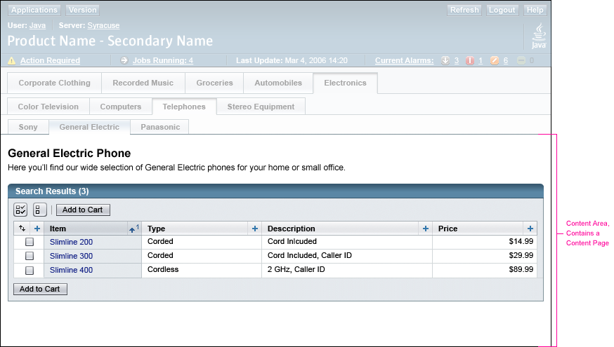
Content Area When Using a Left-Right Pane Set Top-Level Navigation Style
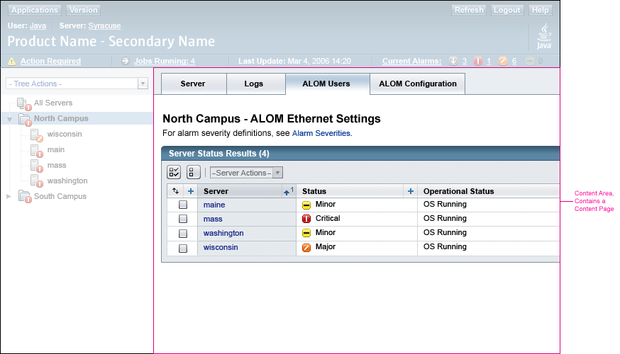
The content area can contain two different kinds of pages:
Note that pop-up windows can only contain secondary-content pages.
The guidelines in this section help to create a consistent visual layout in the application's content area. The following example shows a simple content area containing a single table.
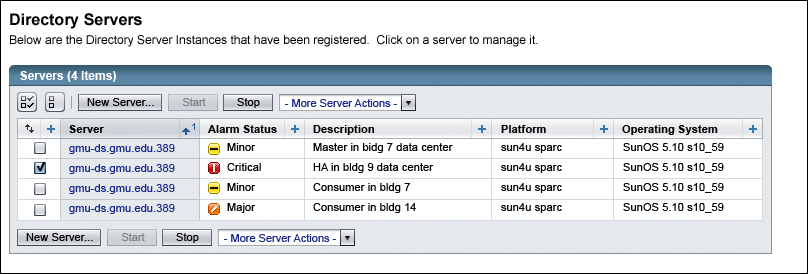
Note that this example assumes that the top-level navigation style (see Chapter 5, Top-Level Navigation) is not using a left-right pane set. The full width of the browser window is used for the content area.
When a left-right pane set is used for top-level navigation, only the right pane is used for the content area. Also, an application might need to place a shaded bar at the top of the content area (right pane). If used, this bar aligns with, and matches the color of, a similar bar placed at the top of the navigation tree in the left pane. This bar is used to display breadcrumbs or parentage paths (see 6.3 Breadcrumbs and Parentage Paths) or to hold content area tabs (see 6.4.2 Using Tabs for Content Area Navigation).
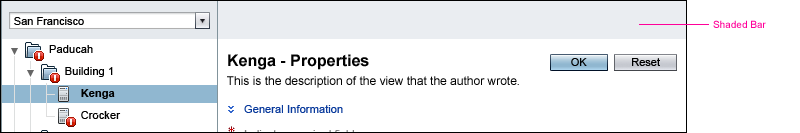
 If needed for breadcrumbs or parentage paths, place a shaded bar at the top of the content
area when the top-level navigation style uses a left-right pane set. If the bar is not needed for
breadcrumbs or parentage paths, do not use it. However, if the bar is used on any page, it must
be displayed on all pages of the application, even if it stands empty on some content pages.
If needed for breadcrumbs or parentage paths, place a shaded bar at the top of the content
area when the top-level navigation style uses a left-right pane set. If the bar is not needed for
breadcrumbs or parentage paths, do not use it. However, if the bar is used on any page, it must
be displayed on all pages of the application, even if it stands empty on some content pages.
 Leave margins at the left and right edges of the content area to prevent it
from butting directly against the window or frame borders. Note that the only
elements that these margins do not apply to are the shaded bar, when used, and
content area tabs, if used (see 6.4.2 Using Tabs for Content
Area Navigation).
Leave margins at the left and right edges of the content area to prevent it
from butting directly against the window or frame borders. Note that the only
elements that these margins do not apply to are the shaded bar, when used, and
content area tabs, if used (see 6.4.2 Using Tabs for Content
Area Navigation).
 Include a content page title for all pages displayed in the content area. (See
6.2 Content Page Titles for more information.)
Include a content page title for all pages displayed in the content area. (See
6.2 Content Page Titles for more information.)
 Allowing for the margins at the left and right edges of the content area, make
all tables assume the entire width of the content area, regardless of the number
of columns in each table. For more information on tables, see Chapter
9, Tables.
Allowing for the margins at the left and right edges of the content area, make
all tables assume the entire width of the content area, regardless of the number
of columns in each table. For more information on tables, see Chapter
9, Tables.
The layout of elements within the content area is primarily controlled by the components in the Sun Common UI Component Library (in open source, the Project Woodstock components). However, if pixel layout specifications are needed, see Appendix E, Pixel Specifications for more information.
At times, it might be necessary to display an alert message on a content page. These messages are called inline alerts (see 14.1 Inline Alerts).
 Display inline alert messages directly above the content page title, and centered horizontally with respect to the width of the content area of the page. (See
6.2 Content Page Titles for information about content page titles.)
Display inline alert messages directly above the content page title, and centered horizontally with respect to the width of the content area of the page. (See
6.2 Content Page Titles for information about content page titles.)
The following shows the use of an inline alert message above the content page title on a page.
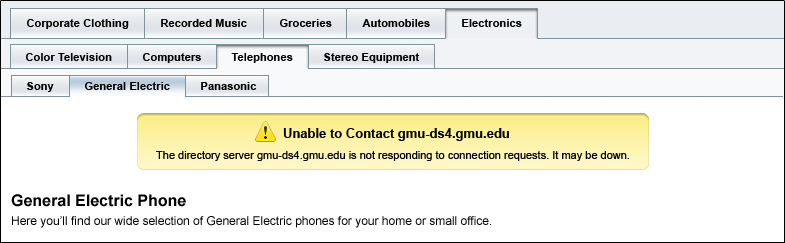
At times it might be necessary to call attention to certain items in a list or table because they share some attribute that is important for the user to know, but that is not obvious by looking at the items in the list or the table. This is not the same as using an asterisk .gif image to indicate required fields. See the following section, 6.1.3 Marking Required Fields, and 7.3 Text Elements for more information about required fields.
An asterisk may be placed to the right of items in lists or tables when it is necessary to identify some attribute about these items. For example, if there are items in a list or table that cannot be edited for some reason, they can be marked with an asterisk. An asterisk used for this purpose is called a footnote.
 When marking an item with an asterisk, place the asterisk to the right of the item's name (for example, account33*).
When marking an item with an asterisk, place the asterisk to the right of the item's name (for example, account33*).
 If an item is marked with an asterisk, include field inline help (if list items are marked) or page
inline help (if table items are marked) explaining the meaning of the asterisk. See 11.1 Inline Help for information about page and field inline help.
If an item is marked with an asterisk, include field inline help (if list items are marked) or page
inline help (if table items are marked) explaining the meaning of the asterisk. See 11.1 Inline Help for information about page and field inline help.
Here is an example:
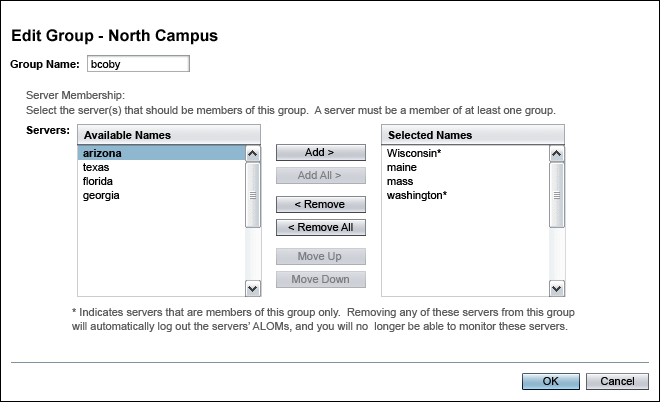
Sometimes a content page may display fields for which user input is required. These are called required fields. Required fields are indicated by a special asterisk-like image, . See 7.3 Text Elements for guidelines on using this image to denote required fields.
Content page titles identify all the information necessary for a user to completely understand the page that is displayed. Two types of information can comprise the content page title:
Both primary-content pages and secondary-content pages display content page titles. The titles differ slightly in their composition and formatting. See the following two sections, 6.2.1 Primary-Content Page Titles and 6.2.2 Secondary-Content Page Titles, for details pertaining to each type of content page title.
Here is an example of a content page title (The first element under the content
page title is page inline help text. See
11.1 Inline Help and 11.1.2 Positioning Inline Help for more information about page inline help.):
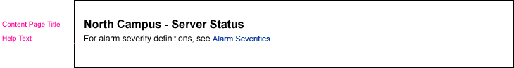
Note that there is no horizontal rule under the content page title text.
 Include a content page title at the top of every content page.
Include a content page title at the top of every content page.
Note that full-page alert messages follow a specific format. For more information,
see 14.3 Full-Page Alerts.
Also, note that if content area navigation tabs are used, the content page title is displayed below these
tabs. See 6.4.2 Using Tabs for Content Area Navigation for more information.
 In general, place the text of the content page title at the top of the content page, but below any element that must appear above it (for example, the masthead,
a tab control, or a right pane shaded bar).
In general, place the text of the content page title at the top of the content page, but below any element that must appear above it (for example, the masthead,
a tab control, or a right pane shaded bar).
 Apply headline capitalization to all content page titles (see 2.5 Text Capitalization), except if object names are referenced. Object names should retain their
capitalization, even when they are displayed in content page titles.
Apply headline capitalization to all content page titles (see 2.5 Text Capitalization), except if object names are referenced. Object names should retain their
capitalization, even when they are displayed in content page titles.
 Use both object information and page focus information whenever they are necessary to accurately identify
the contents of the page.
Use both object information and page focus information whenever they are necessary to accurately identify
the contents of the page.
 When the page is showing information that is limited to a particular object
(or object scope) selected in a tree, include the object information in the content page title.
When the page is showing information that is limited to a particular object
(or object scope) selected in a tree, include the object information in the content page title.
 For primary-content pages, when both object information and page focus information are included in the content page
title, display the object information first, followed by the main focus of the page:
<object name> - <main focus of the page>
For primary-content pages, when both object information and page focus information are included in the content page
title, display the object information first, followed by the main focus of the page:
<object name> - <main focus of the page>
 When both pieces of information are used, separate them with a hyphen.
When both pieces of information are used, separate them with a hyphen.
Here are some examples of primary-content page titles using both object and page focus information:
hesse - Host
jsmith - Properties
Building 1 - Ethernet Settings
 For secondary-content pages, when both object information and page focus information are included in the content page
title, display the main focus of the page first, followed by the object information,
using the following format: <main focus of the page> - <object name>
For secondary-content pages, when both object information and page focus information are included in the content page
title, display the main focus of the page first, followed by the object information,
using the following format: <main focus of the page> - <object name>
 When the focus of the page is to allow users to perform an action, make sure you identify the
action the user can perform on the page. The content page title should include:
When the focus of the page is to allow users to perform an action, make sure you identify the
action the user can perform on the page. The content page title should include:
Here are some examples of secondary-content page titles:
Add Server
Edit Host - myhost
Load Module - module27
Schedule Task
 In the rare case when the menu command, button, or link that invokes the
secondary-content page is not a verb, the format does not change, use:
<main focus of the page> - <object name>. However, if simply using the non-verb
phrase is not clear, consider changing the invoking command to contain a verb,
or if that will not work, consider adding a verb to the content page
title so that it is more task-based.
In the rare case when the menu command, button, or link that invokes the
secondary-content page is not a verb, the format does not change, use:
<main focus of the page> - <object name>. However, if simply using the non-verb
phrase is not clear, consider changing the invoking command to contain a verb,
or if that will not work, consider adding a verb to the content page
title so that it is more task-based.
Here is an example of a secondary-content page title that does not contain a verb.
Advanced Sort - Current Alarms
Here is an example of a secondary-content page title to which a verb was added.
Specify Medium - Primary Advertising Campaign
(instead of) Medium - Primary Advertising Campaign
 Strive for consistency in the format of your application's secondary-content-page titles.
Strive for consistency in the format of your application's secondary-content-page titles.
Use these guidelines when composing content page titles:
 Word the title based on the users' language and how they perceive the information displayed
on the page, not on technical terms or phrases. For example, use "Alarm Monitor" rather than "Alarm
Monitoring Utility."
Word the title based on the users' language and how they perceive the information displayed
on the page, not on technical terms or phrases. For example, use "Alarm Monitor" rather than "Alarm
Monitoring Utility."
 Content page titles should enable users to confirm that they are where they expect to be.
Content page titles should enable users to confirm that they are where they expect to be.
To that end, the titles should reflect a clear name of what the user is viewing on the page. Often, this means including the name of the tab selection, button text, menu command, and so on that resulted in the page being displayed.
When multiple levels of tabs are used (see 5.2.2 Two-Level Tabbed Panes and 5.2.3 Three-Level Tabbed Panes), this guideline might require making a name that combines the lowest-level tab selection with the tab selection above it.
Another possibility is that the most descriptive name does not use the tab names at all.
The designer should use the clearest title possible that both identifies what users are viewing and lets them easily verify that they are in the right place.
 When the focus of the page is to display object information, make sure you identify the type of
object or information being displayed using a descriptive name. For example: Topology View
When the focus of the page is to display object information, make sure you identify the type of
object or information being displayed using a descriptive name. For example: Topology View
 For writing style guidance, see 1.4 Resources for Application Designers.
For writing style guidance, see 1.4 Resources for Application Designers.
 Be consistent with the format of your content page titles throughout your application.
Be consistent with the format of your content page titles throughout your application.
 When a content page contains a single table, make the content page title and the table title be unique, if possible.
When a content page contains a single table, make the content page title and the table title be unique, if possible.
It might appear that the content page title and the table title should be the same. Sometimes, this might be the case. However, when deciding upon titles, consider both the page context and the specific data being displayed in the table.
Use the following suggestions to help identify unique content page titles and table titles.
Using Content Page Context:
 If the content page title requires object information to be displayed in order to specify the proper context of the
page, include this information in the content page title, but not in the table title.
If the content page title requires object information to be displayed in order to specify the proper context of the
page, include this information in the content page title, but not in the table title.
For example:
Content Page Title: Building 1 - ALOM Ethernet Settings Table Title: ALOM Ethernet Settings
Using Specific Table Data:
 Consider adding qualifying information to the table title.
Consider adding qualifying information to the table title.
For example, instead of using the content page title "Summary Report" with a matching table title, try:
or
Content Page Title: Summary Report Table Title: Summary Report of Investments
Content Page Title: Alarms Summary Table Title: Current Alarms
Both breadcrumbs and parentage paths are sets of links displayed on the content pages of main browser windows
and pop-up windows. They provide information about the user's location within the application. They
also allow the user to navigate to other places in the application. The distinction between them
lies in the nature of their links:
Breadcrumbs and parentage paths are used to indicate physical and logical paths that are not displayed through other navigation elements. For instance, selected items in trees and tabs indicate the path taken to reach the currently displayed page. A breadcrumb or parentage path is not necessary when these navigation elements are used because they also sufficiently indicate the user's location.
A breadcrumb might be necessary, for example, when the user can navigate beyond the location that is indicated by a tree or a tab control. This could happen if navigation links are also provided directly on the displayed content page.
A parentage path might be necessary, for example, when navigation is not indicated by a tree or tab control, and a user follows a link in a set of search results. The parentage path could indicate the newly opened object's location in the object hierarchy. The Search Results page would not be included as a link as it is not part of the object's hierarchy. The fact that the user used a Search Results page to get to the object might not be important information to provide. So, a parentage path would be used instead of a breadcrumb.
In practice, however, the breadcrumb is often equivalent to the parentage path because a user typically comes to a page by sequentially traversing an object's hierarchy.
Breadcrumbs or a parentage path can be used on primary-content pages and secondary-content pages displayed in the main browser window. They can also be used on secondary-content pages displayed in pop-up windows. The guidelines that follow indicate when and how to use these elements.
 Do not use breadcrumbs or a parentage path to show information that is already displayed using other
navigation elements such as trees and tabs.
Do not use breadcrumbs or a parentage path to show information that is already displayed using other
navigation elements such as trees and tabs.
 Show breadcrumbs or a parentage path on primary-content pages that appear as a result of drill down
(clicking on links in the page). Do this because other navigation elements that may be available
on the page (e.g. tabs, a tree) won't allow users to navigate to any of the pages that were displayed using drill down.
Show breadcrumbs or a parentage path on primary-content pages that appear as a result of drill down
(clicking on links in the page). Do this because other navigation elements that may be available
on the page (e.g. tabs, a tree) won't allow users to navigate to any of the pages that were displayed using drill down.
 When breadcrumbs or a parentage path are displayed on primary-content pages that appear as a result of
drill down, always include a button on the resulting page that will bring the user back to the page
from which they had come. Label the button "Back to <Short Page Name>," where <Short Page Name> is a
short name for the page the user will return to.
When breadcrumbs or a parentage path are displayed on primary-content pages that appear as a result of
drill down, always include a button on the resulting page that will bring the user back to the page
from which they had come. Label the button "Back to <Short Page Name>," where <Short Page Name> is a
short name for the page the user will return to.
If a breadcrumb is displayed on the primary-content page resulting from the drill-down, <Short Page Name>
will be the same name as the one shown in the breadcrumb. If a parentage path is displayed instead,
<Short Page Name> will not necessarily be the same as what is used in the parentage path. It will just be
a short name for the page the user will be returning to.
Displaying the Back to <Short Page Name> button prevents the breadcrumbs or the parentage path from being
the only way users can navigate from these pages. (See the following two guidelines for more information.)
 Keep breadcrumb and parentage path names short and clear. This is important because these names
might be used on Back to <Short Page Name> buttons.
Keep breadcrumb and parentage path names short and clear. This is important because these names
might be used on Back to <Short Page Name> buttons.
 If a Back to <Short Page Name> button is used on a primary-content page, follow these guidelines:
If a Back to <Short Page Name> button is used on a primary-content page, follow these guidelines:
The button must:
For information about primary and secondary button styles, see 7.1 Action Buttons.
For information about the style and placement of buttons used to allow users to save or abandon
changes on a primary-content page, see 6.6.1 Saving Changes on Primary-Content Pages.
See the examples further down in this section to see Back to <Short Page
Name> buttons used in context. Example 1, Example
2
(These are the 4th and 5th images down from here, respectively.)
 When a breadcrumb, parentage path, or the Back to <Short Page Name> button is used to return to a previously visited page, consider the tasks, frequency of those tasks, and typical use cases that would be involved when determining if selections or input previously made on that page should be retained (kept in memory for future display if the user returns to the page) or not.
When a breadcrumb, parentage path, or the Back to <Short Page Name> button is used to return to a previously visited page, consider the tasks, frequency of those tasks, and typical use cases that would be involved when determining if selections or input previously made on that page should be retained (kept in memory for future display if the user returns to the page) or not.
The following list offers some guidance in determining whether or not to retain previously entered input or selections:
 If you frequently have five or more levels of drill down, reexamine your design because
the breadcrumbs or a parentage path can become long and cluttered. Consider restructuring your
application or using other UI elements, such as trees and tabs,
for navigation.
If you frequently have five or more levels of drill down, reexamine your design because
the breadcrumbs or a parentage path can become long and cluttered. Consider restructuring your
application or using other UI elements, such as trees and tabs,
for navigation.
 If the display of a secondary-content page removes the display of a navigation element (for example,
tabs), show a breadcrumb or parentage path on the page. The breadcrumb or parentage path should include the path that would have been displayed
in the navigation element, had it not been removed. Follow this requirement unless it doesn't make sense for a particular
secondary-content page.
If the display of a secondary-content page removes the display of a navigation element (for example,
tabs), show a breadcrumb or parentage path on the page. The breadcrumb or parentage path should include the path that would have been displayed
in the navigation element, had it not been removed. Follow this requirement unless it doesn't make sense for a particular
secondary-content page.
Showing the information that had been displayed in the navigation element provides both context and navigation.
 When breadcrumbs or a parentage path are displayed on a page that allows users to provide
input, or to view, edit, and save changes, clicking on a link in the breadcrumb or parentage path will
navigate accordingly without saving changes.
When breadcrumbs or a parentage path are displayed on a page that allows users to provide
input, or to view, edit, and save changes, clicking on a link in the breadcrumb or parentage path will
navigate accordingly without saving changes.
 Do not show breadcrumbs or a parentage path on full-page alerts. Full-page alerts
follow a specific layout format. See 14.3 Full-Page
Alerts for more information.
Do not show breadcrumbs or a parentage path on full-page alerts. Full-page alerts
follow a specific layout format. See 14.3 Full-Page
Alerts for more information.
 Include breadcrumbs or parentage paths on pop-up windows only if the user is able to navigate within a pop-up window. For example, in a pop-up window that is simply displaying information, the user may be able to drill down to lower levels of detailed information within the pop-up window. In this case, breadcrumbs would be used.
Include breadcrumbs or parentage paths on pop-up windows only if the user is able to navigate within a pop-up window. For example, in a pop-up window that is simply displaying information, the user may be able to drill down to lower levels of detailed information within the pop-up window. In this case, breadcrumbs would be used.
 If breadcrumbs or a parentage path is used in a pop-up window, do not include links to the main window
from which the pop-up window was invoked. In pop-up windows, the highest order link in the
breadcrumb or parentage path must originate within the pop-up window.
If breadcrumbs or a parentage path is used in a pop-up window, do not include links to the main window
from which the pop-up window was invoked. In pop-up windows, the highest order link in the
breadcrumb or parentage path must originate within the pop-up window.
 Because breadcrumbs or parentage paths on pop-up windows won't include links to the main window,
make sure that content page titles on pop-up windows provide context information.
Because breadcrumbs or parentage paths on pop-up windows won't include links to the main window,
make sure that content page titles on pop-up windows provide context information.
There is no visual distinction between a breadcrumb and a parentage path.
The following is an example of a breadcrumb showing the correct color and font usage:
 Use terms that accurately indicate the levels in the hierarchy that is to be shown when deciding
on parentage path links.
Use terms that accurately indicate the levels in the hierarchy that is to be shown when deciding
on parentage path links.
For example, if a hierarchy uses physical location to organize servers, a parentage path using appropriate terms might be: North Campus > Building 1 > Room 27 > server1b. It would be inappropriate to use terms that do not indicate physical location in this parentage path.
There are a number of different locations where breadcrumbs and parentage paths may be displayed.
Depending on where the breadcrumb or parentage path is displayed, it may appear on different colored
backgrounds.
The placement of breadcrumbs and parentage paths depends on when a user encounters drill-down navigation (clicking individual links on
a page), and also on what forms of navigation are offered on the page the user drills down to.
With drill-down navigation, breadcrumbs or parentage paths provide both context and a means for backward navigation. They should not be
used when context and navigation are available through other displayed navigation elements (a tree or tabs, for example).
Where both tabs and drill-down are used, breadcrumbs or a parentage path may be placed above or below the tabs, depending on when the
user encounters the drill-down. For example, breadcrumbs or a parentage path would be placed above the tabs when the user drills
down and the resulting page displays tabs. However, they would be placed below the tabs when the user navigates through a set of tabs,
and then can drill further down using links on the page.
Often, if the top-level navigation style uses tabbed panes (see 5.1.2 Tabbed Panes), or if content area tabs are displayed in the right hand pane, drill-down is available on the page the user tabs to and the links of the breadcrumb or parentage path would appear beneath the lowest level of tabs, directly on the content page. If tabs are not used in the right pane but drill-down is available, the breadcrumb or parentage path links would be placed in a shaded bar at the top of the right hand pane.
 Avoid organizing your application in a way that allows users to drill down to pages that show tabs (resulting in
breadcrumbs above tabs), and then select a tab and drill further down. This results in a page showing breadcrumbs or a parentage path
both above and below the tabs, which could be confusing to users.
Avoid organizing your application in a way that allows users to drill down to pages that show tabs (resulting in
breadcrumbs above tabs), and then select a tab and drill further down. This results in a page showing breadcrumbs or a parentage path
both above and below the tabs, which could be confusing to users.
Below are some scenarios describing where to place breadcrumbs or a parentage path based on when drill-down navigation would be encountered by the user. Find the scenario or scenarios that best match your application and follow the guidelines that apply.
If the top-level navigation style uses drill-down, and the resulting pages do not use tabs, place the links of the breadcrumb or parentage path beneath the masthead on the white background of the page:
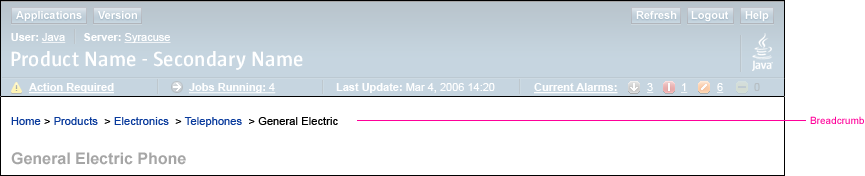
In situations where the top-level navigation style uses drill-down, and some of the resulting pages use tabs, while others do not, place the breadcrumbs or parentage path in a shaded bar beneath the masthead whether or not there are tabs on the resulting page. This is recommended so that a consistent appearance for the breadcrumbs or parentage path is presented as users move from page to page.
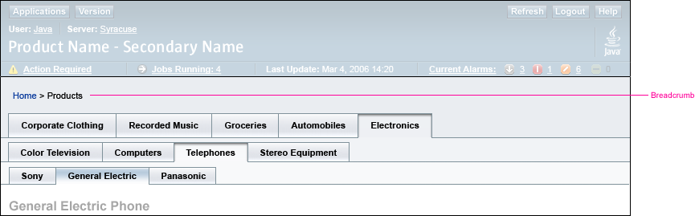
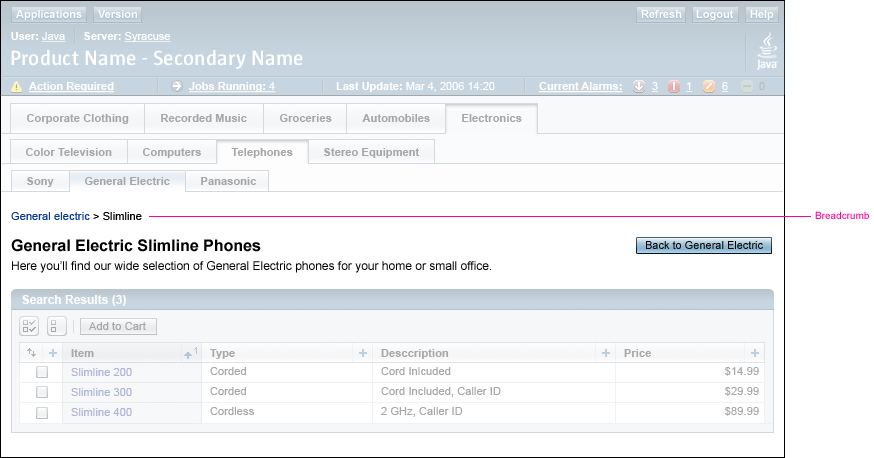
Note that the breadcrumb starts with the lowest-level active tab selection, General Electric. This enables users to return to the General Electric page from the page that they have drilled down to, the Slimline page. The tab selection General Electric is not clickable because it has already been selected and represents the active tab selection.
Also, note the Back to General Electric button, which allows users to navigate back to the previously displayed page.
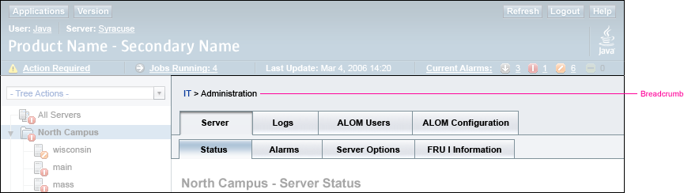
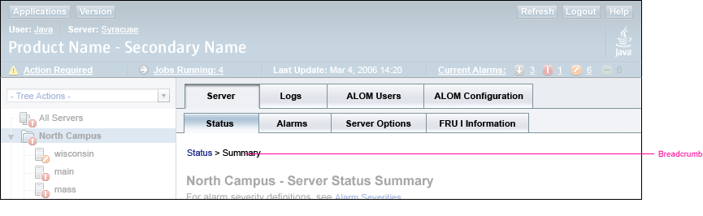
In Chapter 5, Top-Level Navigation, several options are presented for setting up a navigational scheme for the objects and data in your application. However, there may be times when, after navigating to a particular object or type of information using one of these forms of navigation, additional navigation within the content area, itself, is necessary. This navigation, called content area navigation, is subordinate to the top-level navigation discussed in Chapter 5.
Content area navigation is used for situations such as allowing users to move between different views of the same data (such as physical and logical views) or to navigate among a variety of information categories (such as logs and alarms) all pertaining to the same object.
Content area navigation can be very useful. However, before deciding to use both top-level and content area navigation, consider whether any of the available top-level navigation options, alone, could handle all of the application's navigational needs.
This section provides guidelines for designing navigation inside the content area. It is not possible to recommend a single design for content area navigation because there are differing needs across applications. These guidelines, therefore, provide acceptable design options from which designers can choose.
These guidelines support three forms of navigation within the content area:
In general, to select the appropriate design option for your application, consider:
 When using tabs or a drop-down menu for content area navigation, do not use the selection of any one tab or drop-down menu item as a way to drive application logic by interpreting the tab or drop-down menu selection as equivalent to the selection in a conventional data-entry element such as a set of radio buttons. Tabs and navigation drop-down menus are to be used for navigation (view-switching) only.
When using tabs or a drop-down menu for content area navigation, do not use the selection of any one tab or drop-down menu item as a way to drive application logic by interpreting the tab or drop-down menu selection as equivalent to the selection in a conventional data-entry element such as a set of radio buttons. Tabs and navigation drop-down menus are to be used for navigation (view-switching) only.
For example, if your application offers the user two alternative methods for performing some action, do not use tabs or a navigation drop-down menu to switch between the two UIs where the details for the action are entered. Instead, have the user manipulate a conventional data-entry element (for example, a radio button set) to establish which of the two alternatives the user wants to pursue, and then proceed to the page where the details are entered.
For some applications, it may be appropriate to provide content area navigation options in a drop-down menu.
 Use a drop-down menu for content area navigation when the application's navigational needs are
simple. Consider using a drop-down menu when:
Use a drop-down menu for content area navigation when the application's navigational needs are
simple. Consider using a drop-down menu when:
If employed, a drop-down menu for content area navigation can be used in conjunction with any acceptable method of top-level navigation.
 When used for content area navigation, place the drop-down menu on the far right
side of the page, as shown here:
When used for content area navigation, place the drop-down menu on the far right
side of the page, as shown here:
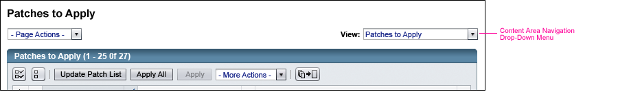
 Place the navigation drop-down menu below the content page title, at the right
side of the content area, allowing for the right-side margin. Ensure that this
drop-down menu is visible, even if the width of the page would require horizontal
scrolling on a 1024 x 768 pixel screen.
Place the navigation drop-down menu below the content page title, at the right
side of the content area, allowing for the right-side margin. Ensure that this
drop-down menu is visible, even if the width of the page would require horizontal
scrolling on a 1024 x 768 pixel screen.
If UI elements on the page would require horizontal scrolling on the minimum supported screen size of 1024 x 768 (for example, the page contains a very wide table), do not align the drop-down menu with the width of the page. Instead, align the menu with the right side of the viewable (without scrolling) portion of the page. This is important so that users can see the drop-down menu without scrolling.
The goal with this consistent placement is to aid usability so that users can learn that a drop-down menu, in this location, is always used for content area navigation.
 Drop-down menus used for content area navigation should be jump menus. These menus exhibit jump menu behavior, in which the action associated with the menu item is performed when the user selects a menu item. See 7.2.3.1 Jump Menus for more information on this style of drop-down menu and 7.2.3.2 Jump Menu Behavior for details about jump menu behavior.
Drop-down menus used for content area navigation should be jump menus. These menus exhibit jump menu behavior, in which the action associated with the menu item is performed when the user selects a menu item. See 7.2.3.1 Jump Menus for more information on this style of drop-down menu and 7.2.3.2 Jump Menu Behavior for details about jump menu behavior.
 Precede
the drop-down menu with a label using the normal style for field labels. See 7.3.1
Labels for more information about field labels.
Precede
the drop-down menu with a label using the normal style for field labels. See 7.3.1
Labels for more information about field labels.
"View:" is a typical label for drop-down menus that are used for content area navigation.
 Use "View:" as
the label for a content area navigation drop-down menu when it is used to change
views of the current data displayed on the page.
Use "View:" as
the label for a content area navigation drop-down menu when it is used to change
views of the current data displayed on the page.
 Always
display the current selection in the drop-down menu to indicate the current
point of navigation.
Always
display the current selection in the drop-down menu to indicate the current
point of navigation.
 Apply
headline capitalization to the drop-down menu label and the items listed in
the drop-down menu (see 2.5 Text Capitalization).
Apply
headline capitalization to the drop-down menu label and the items listed in
the drop-down menu (see 2.5 Text Capitalization).
 If any items in a drop-down menu used for content area navigation are temporarily unavailable, they
should be disabled. They should not be removed entirely from the menu. (See Chapter 7, Simple Elements for
information about disabling UI elements.)
If any items in a drop-down menu used for content area navigation are temporarily unavailable, they
should be disabled. They should not be removed entirely from the menu. (See Chapter 7, Simple Elements for
information about disabling UI elements.)
 If all drop-down menu items are temporarily disabled, disable the individual menu items
instead of disabling the drop-down menu element itself. This allows users to see what navigational options
are possible, even if they are temporarily unavailable.
If all drop-down menu items are temporarily disabled, disable the individual menu items
instead of disabling the drop-down menu element itself. This allows users to see what navigational options
are possible, even if they are temporarily unavailable.
 Follow the guidelines in 6.4 Content Area Navigation. Guidelines in this section apply to both content area tabs and to drop-down menus used for content area navigation.
Follow the guidelines in 6.4 Content Area Navigation. Guidelines in this section apply to both content area tabs and to drop-down menus used for content area navigation.
 Consider these usability tradeoffs of using drop-down menus for content area navigation:
Consider these usability tradeoffs of using drop-down menus for content area navigation:
Positive:
For example, in a traditional interface, drop-down menus are typically used for value selection, not as a navigation method. If a content area navigation drop-down menu appears on a page that also uses a drop-down menu for value selection, the user might think that the navigation menu is another value selection menu. As a result, the user might make a selection and then unexpectedly be taken to a new page. Conversely, the user might miss a critical value selection because its drop-down menu looks like a drop-down menu for content area navigation.
The use of different styles of drop-down menus for value selection and navigation (see 7.2.1.3 Standard Drop-Down Menu and 7.2.3.1 Jump Menus) might help alleviate this concern, however.
Other techniques, such as using multiple levels of tabs (see 6.4.2 Using Tabs for Content Area Navigation) or displaying a longer page using content page sections (see 6.7.2 Using Content Page Sections) should be considered before choosing to use a drop-down menu.
 Because content area tabs have fewer negative tradeoffs than do content area drop-down menus
(see 6.4.2.3 Usability Tradeoffs of Tabs Used for Content Area Navigation),
use tabs whenever possible. This is recommended even if it results in internal inconsistency, with tabs used in some places,
drop-down menus in others. However, be consistent in the use of a given user interface element when providing the same set of options on multiple pages.
Because content area tabs have fewer negative tradeoffs than do content area drop-down menus
(see 6.4.2.3 Usability Tradeoffs of Tabs Used for Content Area Navigation),
use tabs whenever possible. This is recommended even if it results in internal inconsistency, with tabs used in some places,
drop-down menus in others. However, be consistent in the use of a given user interface element when providing the same set of options on multiple pages.
For some applications, it may be appropriate to provide content area navigation options using a set of tabs. This option is only intended for use when a left-right pane set is used for top-level navigation, not when tabs are used for top-level navigation. Using content area tabs with top-level navigation tabs would result in two separate sets of tabs on a single page, one below the other, which might be confusing. (See Chapter 5, Top-Level Navigation for more information on options for designing top-level navigation.)
 Use tabs for content area navigation when complex navigational requirements must be met. For example,
tabs may be used when more than one level of navigation is needed. Consider using tabs for content
area navigation when:
Use tabs for content area navigation when complex navigational requirements must be met. For example,
tabs may be used when more than one level of navigation is needed. Consider using tabs for content
area navigation when:
In general, tabs should fit without scrolling using a 1024 x 768 monitor after considering the effects of text expansion for localization and the use of a 24-point font size for accessibility. For information about accessible font sizes, see Appendix D, Accessibility Requirements.
Content area navigation tabs were not designed to be used with top-level navigation tabs because standard practice in non browser-based UIs is to avoid the use of nested tabs. However, this option, along with others, is being investigated for cases in which the full screen width is important for an application's data, and where a need exists for content area navigation that cannot be handled by a drop-down menu.
 When used for content area navigation, place the tabs at the top of the content page, above the
content page title.
When used for content area navigation, place the tabs at the top of the content page, above the
content page title.
Note that in some situations, the content area tabs may sit below breadcrumbs displayed in the content area. See the section in 6.3 Breadcrumbs and Parentage Paths that discusses placement options for breadcrumbs and parentage paths for more information.
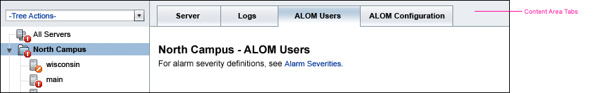
When tabs are used for content area navigation, the margins on the left and right sides of the the content area do not apply to the tabs. (See 6.1 Layout and Alignment of the Content Area for more information on the margins.)
Content area navigation tabs use the same design style as the tabs used for top-level navigation. (See 5.2 Tabbed Panes Details for more information.)
 If the application needs more than one level of content area tab navigation
choices, use a second row to display the choices that are subordinate to the
selected highest-level tab. Similarly, if needed, a tertiary level can be displayed.
(See 5.2 Tabbed Panes Details for style
and usage guidelines.)
If the application needs more than one level of content area tab navigation
choices, use a second row to display the choices that are subordinate to the
selected highest-level tab. Similarly, if needed, a tertiary level can be displayed.
(See 5.2 Tabbed Panes Details for style
and usage guidelines.)
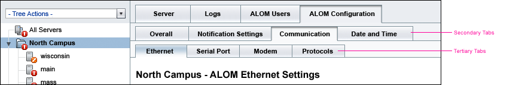
Content area navigation tabs work like traditional tabs in that clicking one of the tabs changes the contents below the tab control. However, when using content area navigation tabs, the actual content page that is displayed is determined by the combination of the current selection in the top-level navigation in the left pane as well as the current tab selection in the content area.
 For the default object selected in the left pane (for example, a tree node), make the leftmost tab choice
the initial default tab selection when the user logs into the application.
Similarly, if secondary tab choices are available for the leftmost tab, make the leftmost
secondary tab (of the leftmost highest-level tab) be the initial default selection. The same guideline
applies when tertiary tabs are also available.
For the default object selected in the left pane (for example, a tree node), make the leftmost tab choice
the initial default tab selection when the user logs into the application.
Similarly, if secondary tab choices are available for the leftmost tab, make the leftmost
secondary tab (of the leftmost highest-level tab) be the initial default selection. The same guideline
applies when tertiary tabs are also available.
For information about how to determine which second-level and third-level tab options to select by default when users are switching among the tab choices, follow the guidelines that apply to top-level navigation tabs covered in Chapter 5, Top-Level Navigation. Specifically, see 5.2.2 Two-Level Tabbed Panes.
The following guidelines discuss what happens as users change the selected object in the left pane.
First, consider that not all objects in the left pane have the same set of tabs associated with them. The set of tab choices may need to change based on the different types of objects in the left pane. This behavior is allowed. However, for any given object type, keep the set of available tabs consistent.
 Maintain consistency in the set of tabs used for all left pane items representing objects of a
given type.
Maintain consistency in the set of tabs used for all left pane items representing objects of a
given type.
Having different types of objects, with different sets of tabs associated with them, has an impact on determining which tab to display when the user chooses different items in the left pane.
 If the user chooses an item in the left pane that is of the same type as the previously selected
item, do not change the selected tab.
If the user chooses an item in the left pane that is of the same type as the previously selected
item, do not change the selected tab.
Users are likely to examine the information associated with a given tab for a number of objects, if the objects are of the same type.
 If the user chooses an item in the left pane that is of a different type than the previously selected item,
do not change the selected tab under the following two conditions:
If the user chooses an item in the left pane that is of a different type than the previously selected item,
do not change the selected tab under the following two conditions:
 If the two preceding guidelines are not or cannot be followed, always select the leftmost tab (and leftmost second and third level
tab choices, if used) when changing the selected item in the left pane.
If the two preceding guidelines are not or cannot be followed, always select the leftmost tab (and leftmost second and third level
tab choices, if used) when changing the selected item in the left pane.
This approach provides a measure of consistency to the user. The preferred approach, however, is to follow the two guidelines preceding this approach.
 Follow the guidelines in 6.4 Content Area Navigation. Guidelines in this section apply to both content area tabs and to drop-down menus used for content area navigation.
Follow the guidelines in 6.4 Content Area Navigation. Guidelines in this section apply to both content area tabs and to drop-down menus used for content area navigation.
 Consider the following usability tradeoffs of using tabs for content area navigation:
Consider the following usability tradeoffs of using tabs for content area navigation:
Positive:
Content area actions allow users to perform actions on a content page. They may be provided via buttons, drop-down menus, or as links (only applicable to certain table actions - table actions are discussed in 9.4 Table Actions).
 Refer to the guidelines in 7.1.7. Button Labels
regarding how to label content area actions.
Refer to the guidelines in 7.1.7. Button Labels
regarding how to label content area actions.
There are two kinds of content area actions:
In some cases, content page actions and table actions may appear on the same page. Such cases can arise, for example, when a page represents an object that also contains other objects and the contained objects are displayed in one or more tables on the content page. In these cases, follow the guidelines for each kind of action, respectively.
In the following example, the content page is associated with the object selected in the tree, the server named maine. This content page also contains a table with other related servers. The actions that the user can perform on the server itself are contained in the content page actions drop-down menu, which displays "— maine Actions —." The actions that the user can perform on one of the other related servers are contained in the table actions drop-down menu, which displays "— More Server Actions —."
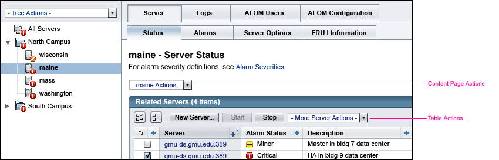
In addition to providing actions that apply to a selected object that the content page represents, other more general actions might be offered as content page actions. An example is an action that provides access to a separate tool that is somehow related to the content on the page.
Content page actions may be provided by using buttons, a drop-down menu, or both.
For guidelines about using buttons for content page actions, see 6.5.2 Content Page Action Buttons. For guidelines about using a drop-down menu, see 6.5.3 Content Page Actions Drop-Down Menu. For guidelines about using both buttons and a drop-down menu, see 6.5.4 Using a Combination of Methods for Content Page Actions.
Guidelines pertaining to all content page actions are covered in this section.
 When used for content page actions, left-align the buttons, the drop-down menu,
or the combination of both of these UI elements within the content area, and
place them below the content page title (and below any page help that might
be displayed beneath the content page title).
When used for content page actions, left-align the buttons, the drop-down menu,
or the combination of both of these UI elements within the content area, and
place them below the content page title (and below any page help that might
be displayed beneath the content page title).
The following examples show content page actions using buttons, a drop-down menu, and a combination of these elements.
Content Page Actions Using Buttons
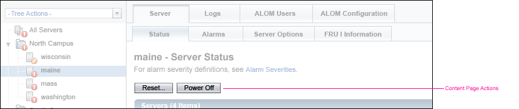
Content Page Actions Using a Drop-Down Menu

Content Page Actions Using Buttons and a Drop-Down Menu
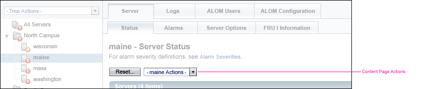
 Content page actions appear on the same line as other UI elements. For example, if
there are search controls (see 12.1.2 Local Quick
Search) or a content area navigation drop-down menu (6.4.1 Using a Drop-Down Menu for
Content Area Navigation), these elements appear on the same line as the content page actions.
Content page actions appear on the same line as other UI elements. For example, if
there are search controls (see 12.1.2 Local Quick
Search) or a content area navigation drop-down menu (6.4.1 Using a Drop-Down Menu for
Content Area Navigation), these elements appear on the same line as the content page actions.
The following example shows all of these controls on the same line.
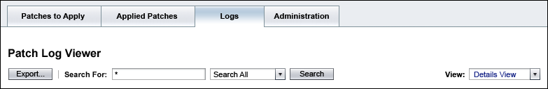
The following guidelines apply to all content area actions (content page actions and table actions) whether they are represented as buttons, drop-down menu commands, or as embedded table action links (see 9.4.3.3 Using Embedded Table Actions).
 Refer to the guidelines in 7.1.7. Button Labels
regarding how to label content area actions.
Refer to the guidelines in 7.1.7. Button Labels
regarding how to label content area actions.
 As with any command that requires additional user input, include ellipsis points after
the action name (for example, "Add..."). For guidelines on when to use ellipsis points, see
7.1.6 Button Labels.
As with any command that requires additional user input, include ellipsis points after
the action name (for example, "Add..."). For guidelines on when to use ellipsis points, see
7.1.6 Button Labels.
 Require confirmation from the user through means of an alert message (see Chapter 14, Alerts and Messages) before a destructive or long action is actually performed.
Require confirmation from the user through means of an alert message (see Chapter 14, Alerts and Messages) before a destructive or long action is actually performed.
 If a content page action results in displaying a new window (a main browser window or a pop-up window), use the
HTML Title attribute (displays as a tool tip) to indicate that a new window will be displayed.
This guideline applies to each action button used. For a drop-down menu, set its HTML Title attribute to
indicate that one or more commands in the menu will result in the display of a new window. An example of
a tool tip for a button might be "Advanced Sort (Opens a New Window)." A drop-down menu example might be
"Server Actions (Some items will open in a new window.)"
If a content page action results in displaying a new window (a main browser window or a pop-up window), use the
HTML Title attribute (displays as a tool tip) to indicate that a new window will be displayed.
This guideline applies to each action button used. For a drop-down menu, set its HTML Title attribute to
indicate that one or more commands in the menu will result in the display of a new window. An example of
a tool tip for a button might be "Advanced Sort (Opens a New Window)." A drop-down menu example might be
"Server Actions (Some items will open in a new window.)"
The purpose of this requirement is to indicate to users when a command results in a new window. This information is displayed in the form of a tool tip, and is also available to any assistive technologies that make use of the HTML Title attribute. See Appendix D, Accessibility Requirements for more information.
 Content area actions that are temporarily unavailable should be disabled. They
should not be removed entirely from view, whether they are represented as buttons or
as drop-down menu commands. (See Chapter 7, Simple Elements for
information about disabling UI elements.) Note that this guideline does not apply to embedded table actions (see 9.4.3.3 Using Embedded Table Actions).
Content area actions that are temporarily unavailable should be disabled. They
should not be removed entirely from view, whether they are represented as buttons or
as drop-down menu commands. (See Chapter 7, Simple Elements for
information about disabling UI elements.) Note that this guideline does not apply to embedded table actions (see 9.4.3.3 Using Embedded Table Actions).
For example, if the content page represents a device that is currently running, commands for both stopping and starting the device would be displayed at all times. The command for starting the device would be disabled when the device is running. The command for stopping the device would be disabled when the device is not running.
 For drop-down menus, when all menu items are temporarily disabled, disable the individual menu items
instead of disabling the drop-down menu element itself. This allows users to see what actions are
possible, even if they are all temporarily unavailable. Note that depending on the browser being used, disabling menu commands might
not be supported. If not, display a JavaScript(TM) alert message (see 14.2 JavaScript Alerts) when the command is invoked. The message should state that the command is not available, explain why, and, if applicable, provide any suggested fix. (See 9.4.4 Dynamic Enabling and Disabling of Table Actions for information about this guideline within the context of table actions.)
For drop-down menus, when all menu items are temporarily disabled, disable the individual menu items
instead of disabling the drop-down menu element itself. This allows users to see what actions are
possible, even if they are all temporarily unavailable. Note that depending on the browser being used, disabling menu commands might
not be supported. If not, display a JavaScript(TM) alert message (see 14.2 JavaScript Alerts) when the command is invoked. The message should state that the command is not available, explain why, and, if applicable, provide any suggested fix. (See 9.4.4 Dynamic Enabling and Disabling of Table Actions for information about this guideline within the context of table actions.)
 Use buttons for content page actions when only a few actions are necessary, or when you want to make the
actions visible without having to open a drop-down menu.
Use buttons for content page actions when only a few actions are necessary, or when you want to make the
actions visible without having to open a drop-down menu.
 Consider these usability tradeoffs of using only buttons for content page actions:
Consider these usability tradeoffs of using only buttons for content page actions:
 If possible, limit to four the number of content page actions represented as buttons.
If possible, limit to four the number of content page actions represented as buttons.
Consider this limit because the UI elements for content area actions, search, and content area navigation are all placed on the same line on a content page and this area might become too cluttered. (See 12.1.2.1 Local Quick Search: Predefined Queries for information on search controls and 6.4.1 Using a Drop-Down Menu for Content Area Navigation for information on content area navigation.)
 Use secondary buttons for all content page action buttons.
Use secondary buttons for all content page action buttons.
See 7.1 Action Buttons for more information about button styles.
 Apply headline capitalization to any button label that is used to represent a content page action
(see 2.5 Text Capitalization).
Apply headline capitalization to any button label that is used to represent a content page action
(see 2.5 Text Capitalization).
 Use a single drop-down menu without buttons in these situations:
Use a single drop-down menu without buttons in these situations:
 Consider these usability tradeoffs of using a single drop-down menu for content page actions:
Consider these usability tradeoffs of using a single drop-down menu for content page actions:
 Drop-down menus used for content page actions should be jump menus. These menus
exhibit jump menu behavior, in which the action associated with the menu item
is performed when the user selects a menu item, without the need for an associated
Go button. See 7.2.3.1 Jump Menus for more information on this style of drop-down menu and 7.2.3.2 Jump Menu Behavior for details about jump menu behavior.
Drop-down menus used for content page actions should be jump menus. These menus
exhibit jump menu behavior, in which the action associated with the menu item
is performed when the user selects a menu item, without the need for an associated
Go button. See 7.2.3.1 Jump Menus for more information on this style of drop-down menu and 7.2.3.2 Jump Menu Behavior for details about jump menu behavior.
 Make the first item in the drop-down menu for content page actions act as the label that
identifies the type of actions contained in the drop-down menu.
Make the first item in the drop-down menu for content page actions act as the label that
identifies the type of actions contained in the drop-down menu.
See the second example in 6.5.1 General Guidelines for Content Page Actions for an example that follows this guideline.
Unlike the drop-down menu used for content area navigation described in 6.4.1 Using a Drop-Down Menu for Content Area Navigation, content page action menus should not be preceded by a label.
In a navigation drop-down menu, the displayed menu item indicates the current view. However, in a drop-down menu containing content page actions, there is no sense of a "current action." So, rather than display a default menu item such as "- Select an Action -" along with a separate label to the left of the menu, the label and default item are combined.
 Precede the label of the drop-down menu with an em-dash and a space ("- "). Append
the label with a space followed by an em-dash (" -"). The result looks like: - Label -.
Precede the label of the drop-down menu with an em-dash and a space ("- "). Append
the label with a space followed by an em-dash (" -"). The result looks like: - Label -.
 If object naming conventions are well known and names are short, use the specific
object name in the menu label (for example, "- t3-09 Actions -"). Otherwise,
use the object type (for example, "server" as in "- Server Actions -") as part
of the menu label.
If object naming conventions are well known and names are short, use the specific
object name in the menu label (for example, "- t3-09 Actions -"). Otherwise,
use the object type (for example, "server" as in "- Server Actions -") as part
of the menu label.
To the extent possible, the menu label should clearly indicate what objects the menu allows users to manage.
 When considering grouping menu items, follow the guidelines in 7.2.3.3
Grouping Menu Items.
When considering grouping menu items, follow the guidelines in 7.2.3.3
Grouping Menu Items.
It is often helpful to apply some grouping scheme to the menu items within a drop-down menu. Grouping logically-related items can make it easier for users to understand the contents of the menu and to locate desired items more quickly.
 Apply
headline capitalization to any drop-down menu command that is used to represent
a content page action (see 2.5 Text Capitalization).
Apply
headline capitalization to any drop-down menu command that is used to represent
a content page action (see 2.5 Text Capitalization).
 Use buttons and a drop-down menu for content page actions in these situations:
Use buttons and a drop-down menu for content page actions in these situations:
 Consider these usability tradeoffs of using buttons and a drop-down menu for content page actions:
Consider these usability tradeoffs of using buttons and a drop-down menu for content page actions:
 Follow all the requirements specified for using buttons (6.5.2 Content Page Action
Buttons) and a drop-down menu (6.5.3 Content Page Actions Drop-Down Menu)
for content page actions.
Follow all the requirements specified for using buttons (6.5.2 Content Page Action
Buttons) and a drop-down menu (6.5.3 Content Page Actions Drop-Down Menu)
for content page actions.
 As with the buttons-only design, do not display more than four buttons for content page actions.
However, consider whether displaying four buttons clutters the user interface. If so, consider
using buttons for a small number of critical actions and placing the remaining actions in a drop-down
menu.
As with the buttons-only design, do not display more than four buttons for content page actions.
However, consider whether displaying four buttons clutters the user interface. If so, consider
using buttons for a small number of critical actions and placing the remaining actions in a drop-down
menu.
 Place the buttons before the drop-down menu.
Place the buttons before the drop-down menu.
 When the drop-down menu includes more of the same type of actions represented in the buttons, then add
the word "More" to the drop-down menu label (for example, "— More maine Actions —").
When the drop-down menu includes more of the same type of actions represented in the buttons, then add
the word "More" to the drop-down menu label (for example, "— More maine Actions —").
When designing the pages of your application, you will often need to organize UI elements onto primary-content pages.
In general, primary-content pages displayed in the main browser window's content area:
The following example shows a typical primary-content page used to display information and provide access to actions. This example demonstrates the UI element alignment and positioning for a whole page.

 Left-align UI elements on a primary-content page unless the element is
specified as having a particular location on the page. For example, navigation drop-down menus are
right-aligned on primary-content pages. Many form elements have a different alignment
requirement (see first required guideline in 6.7 Secondary-Content Page Layout and Use).
Left-align UI elements on a primary-content page unless the element is
specified as having a particular location on the page. For example, navigation drop-down menus are
right-aligned on primary-content pages. Many form elements have a different alignment
requirement (see first required guideline in 6.7 Secondary-Content Page Layout and Use).
 Use content page sections, as discussed in 6.7.2 Using Content
Page Sections when UI elements should be arranged into logical groups. (The first example in 6.7.2
Using Content Page Sections shows the horizontal rules that separate content
page sections.)
Use content page sections, as discussed in 6.7.2 Using Content
Page Sections when UI elements should be arranged into logical groups. (The first example in 6.7.2
Using Content Page Sections shows the horizontal rules that separate content
page sections.)
See Appendix E, Pixel Specifications for more information about laying out UI elements on a page.
 When the primary-content page is used only to display information and provide access to actions (as opposed to allowing edits on the page),
do not place any kind of horizontal rule at the bottom of the page.
When the primary-content page is used only to display information and provide access to actions (as opposed to allowing edits on the page),
do not place any kind of horizontal rule at the bottom of the page.
 When the primary-content page allows users to make and save changes, include
a horizontal rule below the last information element on the
page. This horizontal rule separates the page's information and input elements
from the buttons that let users save their changes.
When the primary-content page allows users to make and save changes, include
a horizontal rule below the last information element on the
page. This horizontal rule separates the page's information and input elements
from the buttons that let users save their changes.
(The example in 6.6.1 Saving Changes on Primary-Content Pages shows the horizontal rule at the bottom of a primary-content page when it is used to allow users to view and edit changes.)
Note that the preceding two requirements do not apply to full-page alerts, which follow a specific layout format. See 14.3 Full-Page Alerts for more information.
See the following section for more information about saving changes on primary-content pages.
Although primary-content pages often display information in tables and provide access to actions, they can also allow users to view, edit, and save changes to an object's properties. This section provides guidelines for the buttons used when saving data on a primary-content page. Note that the buttons used to save data on secondary-content pages are different. They are discussed in 6.7.1 Saving Changes on Secondary-Content Pages.
 If the primary-content page has individual fields, such as fields to allow users
to view, edit, and save changes to an object's properties, follow the guidelines
in 6.7 Secondary-Content Page Layout and Use for UI element
layout and use.
If the primary-content page has individual fields, such as fields to allow users
to view, edit, and save changes to an object's properties, follow the guidelines
in 6.7 Secondary-Content Page Layout and Use for UI element
layout and use.
 When a need exists to save user edits on a primary-content page, provide a
button labeled "Save" and, optionally, a button labeled "Reset", displayed in
that order. (Note that a Reset button is required on tabbed pages that prompt the user to respond
to a JavaScript alert message when the user clicks a tab and there are unsaved changes on the currently displayed page.
See details on the JavaScript alert message later in this section.)
When a need exists to save user edits on a primary-content page, provide a
button labeled "Save" and, optionally, a button labeled "Reset", displayed in
that order. (Note that a Reset button is required on tabbed pages that prompt the user to respond
to a JavaScript alert message when the user clicks a tab and there are unsaved changes on the currently displayed page.
See details on the JavaScript alert message later in this section.)
The following example shows a primary-content page that allows user edits. Note the Save and Reset buttons.

 Make the Save button use the primary button style, and the Reset button,
if displayed, use the secondary button style. See 7.1
Action Buttons for information about button styles.
Make the Save button use the primary button style, and the Reset button,
if displayed, use the secondary button style. See 7.1
Action Buttons for information about button styles.
 Make the Save button save any changes the user has made, and then refresh
the primary-content page.
Make the Save button save any changes the user has made, and then refresh
the primary-content page.
 When users click the Save button, use an inline alert message (see 14.1 Inline Alerts)
to provide feedback about the success of the save operation. However, provide feedback only if
no other change on the refreshed page would give users this feedback, or if the change on the page is minimal.
When users click the Save button, use an inline alert message (see 14.1 Inline Alerts)
to provide feedback about the success of the save operation. However, provide feedback only if
no other change on the refreshed page would give users this feedback, or if the change on the page is minimal.
 Use the word "Save" only on primary-content pages.
Use the word "Save" only on primary-content pages.
The word "Save" is used only on primary-content pages so that only one word consistently indicates that the changes will be saved, but the user will not be returned to a previous page. If a primary-content page is being saved, there is no page to which to return.
 If used, make the Reset button refresh the page with the values it displayed
when the page was first loaded. Any unsaved changes are lost.
If used, make the Reset button refresh the page with the values it displayed
when the page was first loaded. Any unsaved changes are lost.
 Use the Reset button on tabbed pages that prompt the user to respond to a JavaScript alert message when the user clicks a tab and there are unsaved changes on the
currently displayed page. (See details on the JavaScript alert message later in this section.)
Use the Reset button on tabbed pages that prompt the user to respond to a JavaScript alert message when the user clicks a tab and there are unsaved changes on the
currently displayed page. (See details on the JavaScript alert message later in this section.)
 Use the Reset button on pages where there are many fields on the page, or where
there are lots of default values that users might want to retrieve, not on pages
that are initially blank, or on pages containing only one or two fields. Use
the Reset button cautiously, however, because all of the user's most recent
changes are lost when the Reset action is confirmed.
Use the Reset button on pages where there are many fields on the page, or where
there are lots of default values that users might want to retrieve, not on pages
that are initially blank, or on pages containing only one or two fields. Use
the Reset button cautiously, however, because all of the user's most recent
changes are lost when the Reset action is confirmed.
 Always confirm the Reset action with a JavaScript alert message before
discarding the current data. Explain that the page is reset to the values
it displayed when it was first loaded.
For more information about the use of the
Reset button, see the Reset information in 7.1.6 Button Labels.
Always confirm the Reset action with a JavaScript alert message before
discarding the current data. Explain that the page is reset to the values
it displayed when it was first loaded.
For more information about the use of the
Reset button, see the Reset information in 7.1.6 Button Labels.
 On short pages that require no vertical scrolling on a 1024 x 768 screen using
the standard text font size, place the Save and Reset buttons only at the bottom
of the page, right-aligned, below the horizontal rule marking the bottom of
the content (see 6.7 Secondary-Content Page Layout and Use).
On short pages that require no vertical scrolling on a 1024 x 768 screen using
the standard text font size, place the Save and Reset buttons only at the bottom
of the page, right-aligned, below the horizontal rule marking the bottom of
the content (see 6.7 Secondary-Content Page Layout and Use).
 If the Save and Reset buttons are likely to not be visible at the bottom of
the page without having to scroll vertically on a 1024 x 768 screen using the
standard text font size, duplicate these buttons at the top of the page. At the
top of the page, the buttons are right-aligned on the page and displayed to
the right of the content page title (see 6.2 Content Page Titles for information about the placement and format of content page titles).
If the Save and Reset buttons are likely to not be visible at the bottom of
the page without having to scroll vertically on a 1024 x 768 screen using the
standard text font size, duplicate these buttons at the top of the page. At the
top of the page, the buttons are right-aligned on the page and displayed to
the right of the content page title (see 6.2 Content Page Titles for information about the placement and format of content page titles).
 If buttons apply to the content of the page (excluding the Save and Reset buttons),
place these buttons either above or below the page content, as appropriate.
Refer to 6.7.2 Using Content Page Sections for specific
button style and placement guidelines. (When referencing that section, treat
the entire page content between the content page title and the horizontal rule
at the bottom of the page as one content page section - unless content page sections are actually used on the primary-content page.)
If buttons apply to the content of the page (excluding the Save and Reset buttons),
place these buttons either above or below the page content, as appropriate.
Refer to 6.7.2 Using Content Page Sections for specific
button style and placement guidelines. (When referencing that section, treat
the entire page content between the content page title and the horizontal rule
at the bottom of the page as one content page section - unless content page sections are actually used on the primary-content page.)
 If the primary-content page is using tabs, prompt users with a warning message
in a JavaScript alert window if they attempt to navigate to another tabbed
pane without first saving their changes. However, only display a message if the user will think of the
set of tabs as pertaining to one large set of data rather than as a means to navigate to completely
separate areas of the application.
If the primary-content page is using tabs, prompt users with a warning message
in a JavaScript alert window if they attempt to navigate to another tabbed
pane without first saving their changes. However, only display a message if the user will think of the
set of tabs as pertaining to one large set of data rather than as a means to navigate to completely
separate areas of the application.
If the user is likely to consider the selection of a different tab as navigation, do not display a warning message.
 If a JavaScript alert message is displayed when a user clicks a tab and there are unsaved changes on the
currently displayed page, use this text for the message:
If a JavaScript alert message is displayed when a user clicks a tab and there are unsaved changes on the
currently displayed page, use this text for the message:
The page you are leaving contains unsaved changes.Offer two buttons in the message: "Yes" (or "OK", depending on the browser) and Cancel. Make Yes (or OK) the default, which saves changes and moves to the new page based on the selected tab. Cancel returns to the original page so the user can explicitly choose Save or Reset. Any page that prompts the user to respond to this JavaScript alert message must contain a Reset button.
You can save your changes and continue. Or, press Cancel to return to the page, where you can click Reset if you want to undo all unsaved changes.
Save Changes and Continue?
[Yes/OK] [Cancel]
Tab-switching is called out for considering whether to display an alert message because users' assumptions about tabbed panes are so strong. Other actions that can result in data loss, such as switching views, or selecting a tree node may or may not need a message depending on the probability of users expecting the data loss, on the severity of the data loss, and on the level of annoyance from the messages. Future releases of the style guide might address these issues further.
When designing the pages of your application, you will often need to organize UI elements onto secondary-content pages.
In general, secondary-content pages displayed in the main browser window's content area:
Secondary-content pages are commonly populated with UI elements such as text fields, scrolling lists, checkboxes, drop-down menus, and other elements that allow users to specify information. For more information on these UI elements and more complex UI elements, see Chapter 7, Simple Elements and Chapter 8, Complex Elements.
The following example shows a simple secondary-content page that allows users to specify additional input to a user action.
 Indent UI elements (or their labels, as appropriate) from the left edge of the content page title.
Note that this does not apply to tables (see Chapter 9, Tables) and page
inline help text (see 11.1 Inline Help), both of which
are aligned with the left edge of the content page title.
Indent UI elements (or their labels, as appropriate) from the left edge of the content page title.
Note that this does not apply to tables (see Chapter 9, Tables) and page
inline help text (see 11.1 Inline Help), both of which
are aligned with the left edge of the content page title.
 Related form fields should be grouped visually. Unrelated fields should be separated visually. In general, an extra 10 pixels of vertical space should be added between field labels that are not related to one another.
See Appendix E, Pixel Specifications for more information.
Related form fields should be grouped visually. Unrelated fields should be separated visually. In general, an extra 10 pixels of vertical space should be added between field labels that are not related to one another.
See Appendix E, Pixel Specifications for more information.
 Use headline capitalization for all titles, labels, and system generated data
values such as On, Off, True, False, and so on (see 2.5 Text
Capitalization).
Use headline capitalization for all titles, labels, and system generated data
values such as On, Off, True, False, and so on (see 2.5 Text
Capitalization).
 Place labels to the left of the UI elements they identify. However, if the guidelines for a given UI element allow the label to be located above the element, that placement is also acceptable.
Place labels to the left of the UI elements they identify. However, if the guidelines for a given UI element allow the label to be located above the element, that placement is also acceptable.
 Left-align the labels of a vertical set of fields.
Left-align the labels of a vertical set of fields.
 In a vertical set of fields, left-align all of the actual UI elements (for example,
text fields) to the right of the longest label in the set of fields. However,
if the longest label is much longer than the other labels in the set, shorten
or wrap the long label.
In a vertical set of fields, left-align all of the actual UI elements (for example,
text fields) to the right of the longest label in the set of fields. However,
if the longest label is much longer than the other labels in the set, shorten
or wrap the long label.
If a label is long enough to extend its associated control far to the right, shorten it. If shortening the label is not possible, wrap the label. When the label wraps, it should still be left-aligned.
 In the case where an element is taller than one line (for example, a scrolling list, or text
area), vertically align the label with the top line of data that appears in the element.
In the case where an element is taller than one line (for example, a scrolling list, or text
area), vertically align the label with the top line of data that appears in the element.
 When buttons are associated with particular fields (for example, a "Search..."
button next to a text field), use the secondary button style. For an example,
see the "Search..." button in the preceding example. See 7.1
Action Buttons for information about button styles.
When buttons are associated with particular fields (for example, a "Search..."
button next to a text field), use the secondary button style. For an example,
see the "Search..." button in the preceding example. See 7.1
Action Buttons for information about button styles.
 When a button is associated with a field, display it directly
to the right of the field to which it applies.
When a button is associated with a field, display it directly
to the right of the field to which it applies.
 When a button, or a set of buttons, is associated with a group of fields, follow the guidelines in
6.7.2 Using Content Page Sections for button style and placement.
When a button, or a set of buttons, is associated with a group of fields, follow the guidelines in
6.7.2 Using Content Page Sections for button style and placement.
This section provides guidelines for the buttons to use when saving data on secondary-content pages.
 When a need exists to save user edits on a secondary-content page, provide the buttons as ordered
here:
When a need exists to save user edits on a secondary-content page, provide the buttons as ordered
here:
See the example in the preceding section for an example of a secondary-content page using OK and Cancel buttons.
 Make the OK (or other, more specifically, labeled) button use the primary button style, and the Reset (if displayed)
and Cancel buttons use the secondary button style. See 7.1
Action Buttons for information about button styles.
Make the OK (or other, more specifically, labeled) button use the primary button style, and the Reset (if displayed)
and Cancel buttons use the secondary button style. See 7.1
Action Buttons for information about button styles.
 Make the OK (or other, more specifically, labeled) button save any changes the
user has made, and return the user to the previously displayed content page.
Make the OK (or other, more specifically, labeled) button save any changes the
user has made, and return the user to the previously displayed content page.
In most cases, the results of the user's actions on the secondary-content page are reflected on a refreshed primary-content page to which the user is returned. Sometimes, however, a secondary-content page is opened by another secondary-content page. In this case, when work is completed on the second secondary-content page, the user is returned to the first secondary-content page.
 Do not use a button labeled "Save" on secondary-content pages.
Do not use a button labeled "Save" on secondary-content pages.
The word "Save" is used only on pages where changes are saved, but the user is not returned to a previous page. If a primary-content page is displayed, there is no such page to which to return. However, on secondary-content pages, the user is always returned to the preceding primary-content page or secondary-content page.
 If used, make the Reset button refresh the page with the values it displayed
when the page was first loaded. Any unsaved changes are lost.
If used, make the Reset button refresh the page with the values it displayed
when the page was first loaded. Any unsaved changes are lost.
 Use the Reset button on pages where there are many fields on the page, or where
there are lots of default values that users might want to retrieve, not on pages
that are initially blank, or on pages containing only one or two fields. Use
the Reset button cautiously, however, because all of the user's most recent
changes are lost when the Reset action is confirmed.
Use the Reset button on pages where there are many fields on the page, or where
there are lots of default values that users might want to retrieve, not on pages
that are initially blank, or on pages containing only one or two fields. Use
the Reset button cautiously, however, because all of the user's most recent
changes are lost when the Reset action is confirmed.
 Always confirm the Reset action with a JavaScript alert message before
discarding the current data. Explain that the page is reset to the values
it displayed when it was first loaded.
For more information about the use of the
Reset button, see the Reset information in 7.1.6 Button Labels.
Always confirm the Reset action with a JavaScript alert message before
discarding the current data. Explain that the page is reset to the values
it displayed when it was first loaded.
For more information about the use of the
Reset button, see the Reset information in 7.1.6 Button Labels.
 Make the Cancel button return the user to the previously displayed primary-content page
or secondary-content page without saving any changes made.
Make the Cancel button return the user to the previously displayed primary-content page
or secondary-content page without saving any changes made.
 Always place a horizontal rule at the bottom of secondary-content pages to separate
the page content from the buttons that let users save their changes.
Always place a horizontal rule at the bottom of secondary-content pages to separate
the page content from the buttons that let users save their changes.
Note that this requirement does not apply to full-page alerts, which follow a specific layout format. See 14.3 Full-Page Alerts for more information.
 On short pages that require no vertical scrolling on a 1024 x 768 screen using
the standard text font size, place the OK, Reset, and Cancel buttons only at
the bottom of the page, right-aligned, below the horizontal rule marking the
bottom of the content (see 6.7 Secondary-Content Page Layout
and Use).
On short pages that require no vertical scrolling on a 1024 x 768 screen using
the standard text font size, place the OK, Reset, and Cancel buttons only at
the bottom of the page, right-aligned, below the horizontal rule marking the
bottom of the content (see 6.7 Secondary-Content Page Layout
and Use).
 If the OK, Reset, and Cancel buttons are likely to not be visible at the bottom
of the page without having to scroll vertically on a 1024 x 768 screen using
the standard text font size, duplicate these buttons at the top of the page.
At the top of the page, the buttons are right-aligned and displayed to the right
of the content page title (see 6.2 Content Page Titles for information about the placement and format of content page titles).
If the OK, Reset, and Cancel buttons are likely to not be visible at the bottom
of the page without having to scroll vertically on a 1024 x 768 screen using
the standard text font size, duplicate these buttons at the top of the page.
At the top of the page, the buttons are right-aligned and displayed to the right
of the content page title (see 6.2 Content Page Titles for information about the placement and format of content page titles).
 If buttons apply to the content of the page (excluding the OK, Reset, and Cancel
buttons), place these buttons either above or below the page content, as appropriate.
Refer to 6.7.2 Using Content Page Sections for specific
button style and placement guidelines. (When referencing that section, treat
the entire page content between the content page title and the horizontal rule
at the bottom of the page as one content page section - unless content page sections are actually used on the secondary-content page.)
If buttons apply to the content of the page (excluding the OK, Reset, and Cancel
buttons), place these buttons either above or below the page content, as appropriate.
Refer to 6.7.2 Using Content Page Sections for specific
button style and placement guidelines. (When referencing that section, treat
the entire page content between the content page title and the horizontal rule
at the bottom of the page as one content page section - unless content page sections are actually used on the secondary-content page.)
Content page sections are logical groups of fields that are separated visually so that users are better able to understand the contents of the page. They are most often used on pages that are used to allow users to view, edit, and change an object's properties. However, they may be used wherever it would be useful to logically group UI elements.
The following example shows a secondary-content page that allows a user to create a new user account. The UI elements are divided into two content page sections.
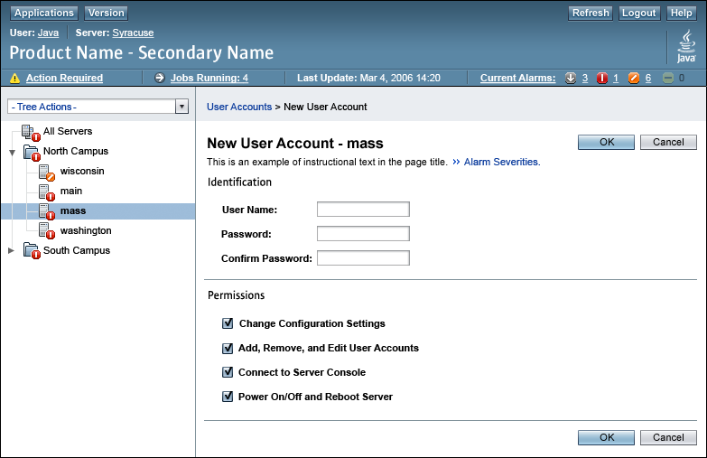
A content page section may also contain subsections. Subsections further organize the information contained in a content page section.
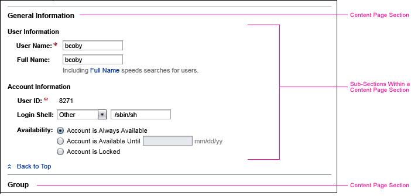
If detailed pixel layout specifications are needed, see Appendix E, Pixel Specifications for more information.
 Do not use more than 12 sections on a page.
Do not use more than 12 sections on a page.
 Separate content page sections with a horizontal rule displayed below
the last element in a section. Do not place this horizontal rule above the first
section on the page. (Note that if a section of jump-to links is used, they become the first section on the page, and a horizontal rule is placed below them. See 6.7.2.1 Jumping To and From Content Page Sections for more information about jump-to links.)
Separate content page sections with a horizontal rule displayed below
the last element in a section. Do not place this horizontal rule above the first
section on the page. (Note that if a section of jump-to links is used, they become the first section on the page, and a horizontal rule is placed below them. See 6.7.2.1 Jumping To and From Content Page Sections for more information about jump-to links.)
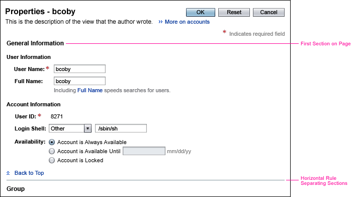
Often, a set of links are displayed at the top of a page to allow users to easily jump to the various content page sections. In this case, place a horizontal rule beneath the set of links to separate it from the content page section below it. See 6.7.2.1 Jumping To and From Content Page Sections for an example and more information on using links at the top of a page.
 Do not use a horizontal rule to separate subsections within a content page section.
Do not use a horizontal rule to separate subsections within a content page section.
 First order sections and subsections in a sequence or grouping that would be logical to the
user. Next, order them by frequency of use so that the more frequently used information precedes
the less frequently used information.
First order sections and subsections in a sequence or grouping that would be logical to the
user. Next, order them by frequency of use so that the more frequently used information precedes
the less frequently used information.
 Always provide succinct section and subsection headings on your content pages.
Always provide succinct section and subsection headings on your content pages.
Using succinct headings for content page sections is particularly important because, if the content page provides links to these sections, the links are named according to the section headings (see 6.7.2.1 Jumping To and From Content Page Sections).
 Use headline capitalization for both section and subsection headings (see
2.5 Text Capitalization).
Use headline capitalization for both section and subsection headings (see
2.5 Text Capitalization).
 If a given section or subsection contains only a single table, try to make the section or
subsection heading different from the table heading, if possible. The section or subsection
heading should be succinct. The table title should be more specific.
If a given section or subsection contains only a single table, try to make the section or
subsection heading different from the table heading, if possible. The section or subsection
heading should be succinct. The table title should be more specific.
 Left-align section headings with the left edge of the content page title. Place
each section heading below the horizontal rule used to separate each section
from the section above it. Note that there is no horizontal rule above the first
section on the page.
Left-align section headings with the left edge of the content page title. Place
each section heading below the horizontal rule used to separate each section
from the section above it. Note that there is no horizontal rule above the first
section on the page.
 Place the first subsection heading directly below the section
heading. Place subsequent subsection headings below the bottommost element of
the preceding subsection.
Place the first subsection heading directly below the section
heading. Place subsequent subsection headings below the bottommost element of
the preceding subsection.
 Indent UI elements from the left edge of the section heading (or the subsection
heading if subsections are used).
Indent UI elements from the left edge of the section heading (or the subsection
heading if subsections are used).
 Within each section or subsection, align UI elements and their labels according to the guidelines specified in 6.7 Secondary-Content Page Layout and Use.
Within each section or subsection, align UI elements and their labels according to the guidelines specified in 6.7 Secondary-Content Page Layout and Use.
 Do not try to align vertical sets of UI elements across sections, but do align them within a content page section,
whether or not subsections are used.
Do not try to align vertical sets of UI elements across sections, but do align them within a content page section,
whether or not subsections are used.
Aligning UI elements across sections can sometimes result in having too much white space between labels and their respective UI elements because one long label in any section would affect the spacing of all elements. Therefore, address alignment issues on a section-by-section basis.
Sometimes, a button or set of buttons applies to a whole section or to a whole subsection. Placement of these buttons depends on the task flow within the section or subsection.
 Use the following information to determine where to place one or more buttons that apply to a section or
subsection on a content page:
Use the following information to determine where to place one or more buttons that apply to a section or
subsection on a content page:
 Use the secondary button style for all buttons that apply to a section or subsection on a page.
Use the secondary button style for all buttons that apply to a section or subsection on a page.
 For situations where a content page is not using sections or subsections, but has buttons that apply
to the entire content page, treat the whole content page as one
big section and use the information in the preceding two guidelines .
For situations where a content page is not using sections or subsections, but has buttons that apply
to the entire content page, treat the whole content page as one
big section and use the information in the preceding two guidelines .
The following image shows buttons that apply to a whole section in a content page. The interaction flow does not dictate that they be placed either above or below the other elements in the section, so they are placed at the top of the section.
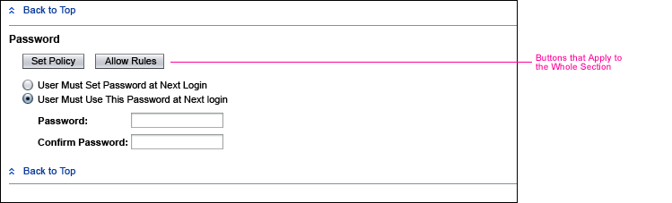
 When a content page using content page sections requires significant scrolling
using a 1024 x 768 screen, with a typical amount of data on the page, and using
the standard text font size, insert a set of links under the content page
title. These links, called jump-to links, allow users to jump to the
content page sections further down on the page.
When a content page using content page sections requires significant scrolling
using a 1024 x 768 screen, with a typical amount of data on the page, and using
the standard text font size, insert a set of links under the content page
title. These links, called jump-to links, allow users to jump to the
content page sections further down on the page.
As a rule of thumb, consider significant scrolling to mean that there is more than one page of data in addition to what is visible without scrolling. However, this is also dependent on the particular data being displayed and how the page is intended to be used. For example, if the user may have to repeatedly scroll up and down to different content page sections, it may be useful to use jump-to links even if there is only one page of additional data. This is probably rare, but helps to illustrate the need for examining the data and its intended usage when determining whether or not to use jump-to links.
(See 12.3.3 Advanced Search Results for information on the one exception to this requirement.)
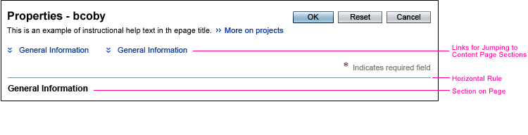
 Do not display jump-to links when significant scrolling is not required, as
this would simply add clutter to the page.
Do not display jump-to links when significant scrolling is not required, as
this would simply add clutter to the page.
For example, two or three short sections on a page would usually not require the use of jump-to links.
 If the length of the page, or certain sections on the page, varies because the
amount of data to display varies, display jump-to-links if the amount of data
could become large enough to require significant scrolling, even if this may
not initially be the case.
If the length of the page, or certain sections on the page, varies because the
amount of data to display varies, display jump-to-links if the amount of data
could become large enough to require significant scrolling, even if this may
not initially be the case.
This could happen, for instance, if one or more of the content page sections displays a data table where the amount of data can grow over time.
 Make the section of jump-to links the first section on the content page.
Make the section of jump-to links the first section on the content page.
 Display the links to the content page sections below the content page title, or below any page inline help that might be displayed
at this location (see 11.1.2 Positioning Inline
Help).
Display the links to the content page sections below the content page title, or below any page inline help that might be displayed
at this location (see 11.1.2 Positioning Inline
Help).
 Do not use a section heading for this section of links. This is the only section that does not
have a heading.
Do not use a section heading for this section of links. This is the only section that does not
have a heading.
The section of links does not have a heading because it does not contain data. Rather, it is a navigational convenience.
 Display a horizontal rule below the section of jump-to links, above the first titled section on the page.
Display a horizontal rule below the section of jump-to links, above the first titled section on the page.
 If there are any required fields on the page, place the required field indicator legend, "*Indicates required field", within the section of jump-to links on its own line below the bottommost link, and right-aligned on the page. If the page requires horizontal scrolling (for example, the page contains a very wide table), right-align the required field indicator legend within the area of the screen that is visible without scrolling.
If there are any required fields on the page, place the required field indicator legend, "*Indicates required field", within the section of jump-to links on its own line below the bottommost link, and right-aligned on the page. If the page requires horizontal scrolling (for example, the page contains a very wide table), right-align the required field indicator legend within the area of the screen that is visible without scrolling.
 If a section of links is used, provide a link to every section on the page, not just a
subset of the content page sections.
If a section of links is used, provide a link to every section on the page, not just a
subset of the content page sections.
 Do not use more than 12 links in this section, as it is only allowable to include up to 12 content page sections on a page.
Do not use more than 12 links in this section, as it is only allowable to include up to 12 content page sections on a page.
 Order the links based on how the content page sections are ordered on the page from top to bottom
(see 6.7.2 Using Content Page Sections).
Order the links based on how the content page sections are ordered on the page from top to bottom
(see 6.7.2 Using Content Page Sections).
 Display the links in columns of no more than 3 links each ordering the links from top to bottom through each column.
Display the links in columns of no more than 3 links each ordering the links from top to bottom through each column.
 Use the following scheme for arranging your links, based on the number of links you need to display:
Use the following scheme for arranging your links, based on the number of links you need to display:
| Links | Arrangement | |
|---|---|---|
| Number of Columns | Links | |
| 2 | 2 | 1 link in each column |
| 3 | 2 | 2 links in the first column, 1 in the second |
| 4 | 2 | 2 links in each column |
| 5 | 3 | 2 links in the first 2 columns, 1 in the third |
| 6 | 3 | 2 links in each column |
| 7 | 3 | 3 links in the first 2 columns, 1 in the third |
| 8 | 3 | 3 links in first 2 columns, 2 in the third |
| 9 | 3 | 3 links in each column |
| 10 | 4 | 3 links in the first 3 columns, 1 in the fourth |
| 11 | 4 | 3 links in the first 3 columns, 2 in the fourth |
| 12 | 4 | 3 links in each column |
 All links must fit, without the need for horizontal scrolling, on a 1024 x 768 screen with text using the standard font size.
All links must fit, without the need for horizontal scrolling, on a 1024 x 768 screen with text using the standard font size.
 Each link is comprised of a clickable icon,
Each link is comprised of a clickable icon,  , and link text that matches the section heading to which the link will jump.
, and link text that matches the section heading to which the link will jump.
 Provide HTML Alt and Title text on the icon of each link in this section. The text
should be "Jump down to the
Provide HTML Alt and Title text on the icon of each link in this section. The text
should be "Jump down to the
 Use headline capitalization for the link text (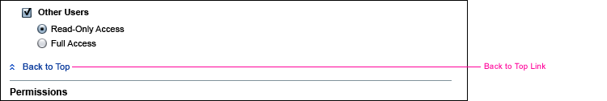see
2.5 Text Capitalization).
Use headline capitalization for the link text (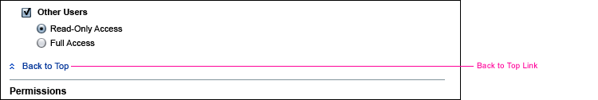see
2.5 Text Capitalization).
 When the content page provides links that enable users to jump down to sections on
the page, place a link at the bottom of each section that enables users to
quickly jump back to the top of the page.
When the content page provides links that enable users to jump down to sections on
the page, place a link at the bottom of each section that enables users to
quickly jump back to the top of the page.
 Each link that takes the user back to the top of the page is comprised of
a clickable icon,
Each link that takes the user back to the top of the page is comprised of
a clickable icon,  ,
and the link text "Back to top."
,
and the link text "Back to top."
 Provide HTML Alt and Title text on the icon of each link in this section. The text should be "Jump to top of page."
Provide HTML Alt and Title text on the icon of each link in this section. The text should be "Jump to top of page."
 Left-align these links and place them
at the bottom of the section, above the horizontal rule separating sections.
Left-align these links and place them
at the bottom of the section, above the horizontal rule separating sections.
 Do not use tabbed panes or drop-down menus for changing views in secondary-content pages. Instead,
use content page sections, optionally with a section of jump-to
links at the top of the page.
Do not use tabbed panes or drop-down menus for changing views in secondary-content pages. Instead,
use content page sections, optionally with a section of jump-to
links at the top of the page.
A visual design that makes clear that a button applies to an entire set of tabbed panes or to an entire set of views is still being considered. Until such a design appears in a future release of the style guide, do not use tabbed panes or multiple views in secondary-content pages.
At times, large amounts of data might need to be presented to the user. The recommended approach in these guidelines is to divide the data into sections (see 6.7.2 Using Content Page Sections).
 If possible, display all data in the application's main browser window.
If possible, display all data in the application's main browser window.
This recommendation attempts to reduce the number of windows a user must manage and track, and reduces the risk of window proliferation.
 When using content page sections does not sufficiently address issues with
presenting large amounts of data to users, consider redesigning the application
so that all information need not be displayed at once.
When using content page sections does not sufficiently address issues with
presenting large amounts of data to users, consider redesigning the application
so that all information need not be displayed at once.
 Consider using an additional window to show large amounts of data only if
one or both of the following rare conditions are true:
Consider using an additional window to show large amounts of data only if
one or both of the following rare conditions are true:
Browser-based applications commonly display UI elements that are noneditable, in other words, read-only. This happens most commonly when displaying an object's properties. Some possible scenarios are:
The following sections provide guidelines for presenting noneditable UI elements.
 Replace the enabled/editable UI elements with read-only representations
when they are noneditable. The following table indicates how to "translate"
some common editable elements to read-only data.
Replace the enabled/editable UI elements with read-only representations
when they are noneditable. The following table indicates how to "translate"
some common editable elements to read-only data.
| Enabled (Normal) Elements | Noneditable (Read-Only) Elements |
|---|---|
| Label: Editable text field | Label: Plain text |
| Label: Radio Button set | Label: Plain text showing the selected radio button text |
| Checkbox plus label | Label: Yes/No, On/Off (or other text, as appropriate) |
| Drop-down menu | Label: Plain text showing the current value in the menu. If no value is selected in the menu, use plain text saying "(None)." |
 Refer to section 7.3.1 Labels for guidelines pertaining to labels.
Refer to section 7.3.1 Labels for guidelines pertaining to labels.
Here are examples of these common editable elements and their noneditable appearances (For the specific noneditable appearance of a more complete set of elements, see Chapter 7, Simple Elements.):
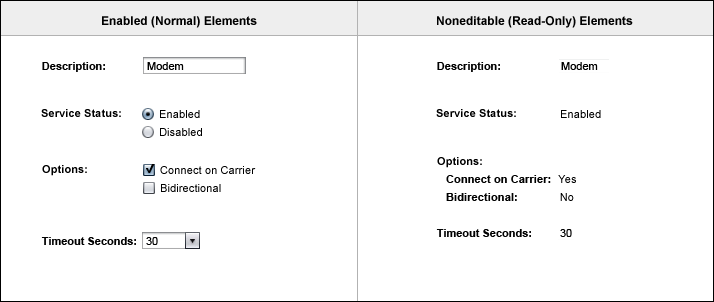
Disclaimer: The preceding examples are not meant to be interpreted as
guidelines for laying out a Property page (vertical spacing is not aligned appropriately for a property page). Each example should be considered individually.
Some content pages contain a mixture of editable and noneditable elements. Such cases arise when a user has certain privileges, but not others. Or, perhaps only some objects on the page are editable. Here is an example:
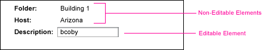
 If the value for a field on a read-only property page is unexpectedly empty
or not applicable, display the dash icon,
If the value for a field on a read-only property page is unexpectedly empty
or not applicable, display the dash icon,  ,
with the tool tip: "Not Applicable" or "Not Available", as appropriate, instead of leaving the value blank. Note that this does not apply to fields
where blank is a valid value.
,
with the tool tip: "Not Applicable" or "Not Available", as appropriate, instead of leaving the value blank. Note that this does not apply to fields
where blank is a valid value.
For example, if a user can optionally enter a description for an object, but chooses not to, the value is blank and should be represented by displaying nothing. However, if a field becomes irrelevant due to other selections the user has made or the value for a field is unexpectedly empty, display the dash icon.
In the example below, Cylinders is not applicable since the Vehicle Type is Bicycle.
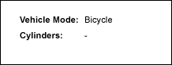
Sometimes, a content page provides UI elements (such as buttons or action menu commands) that invoke secondary-content pages. However, a given user may not have privileges to even view the secondary-content pages that these elements would invoke. In such cases, it is inappropriate to simply disable the buttons and menu commands because disabling a UI element implies that the user can perform some action to enable it.
 Do not include UI elements (such as buttons or action menu commands)
that invoke secondary-content pages that the user does not even have privileges to view.
Do not include UI elements (such as buttons or action menu commands)
that invoke secondary-content pages that the user does not even have privileges to view.
Of course, the buttons or action menu commands should be displayed if they invoke secondary-content pages that the user can view, even if the pages are noneditable.
When an entire content page is temporarily read-only, it should indicate textually that the user does not have the privilege to edit information at that time. This indication helps users who are accustomed to having edit privileges understand that the page is currently noneditable.
 To indicate that the content page is temporarily read-only, use an alert
message in accordance with the guidelines in Chapter 14,
Alerts and Messages. The alert message can be informational or error-related,
depending on the situation. Note that a technical writer determines the final wording of the text in
an alert message. Please refer to the following section for an example.
To indicate that the content page is temporarily read-only, use an alert
message in accordance with the guidelines in Chapter 14,
Alerts and Messages. The alert message can be informational or error-related,
depending on the situation. Note that a technical writer determines the final wording of the text in
an alert message. Please refer to the following section for an example.
 Do not display an alert message in cases where the user always has read-only
access to the content page. Such messages are distracting.
Do not display an alert message in cases where the user always has read-only
access to the content page. Such messages are distracting.
For secondary-content pages that are entirely noneditable, display a button that allows the user to simply dismiss the page rather than the normal submit buttons (for example, OK and Cancel) that are used on editable content pages. The appropriate button to display depends on whether the noneditable secondary-content page is displayed in the browser's main window or in a pop-up window.
 In the browser's main window, display a single button labeled "Back to <Short Page Name>", where
<Short Page Name> is a short name for the page the user will be returned to, the page from which the
secondary-content page was invoked. In a pop-up window, display a single
button labeled "Close."
In the browser's main window, display a single button labeled "Back to <Short Page Name>", where
<Short Page Name> is a short name for the page the user will be returned to, the page from which the
secondary-content page was invoked. In a pop-up window, display a single
button labeled "Close."
A Cancel button on its own would be inappropriate because the user lacks the authorization to submit and abandon changes.
Note that no buttons are necessary on noneditable primary-content pages.
Here is an example of a temporarily noneditable secondary-content page
displayed in a main browser window:
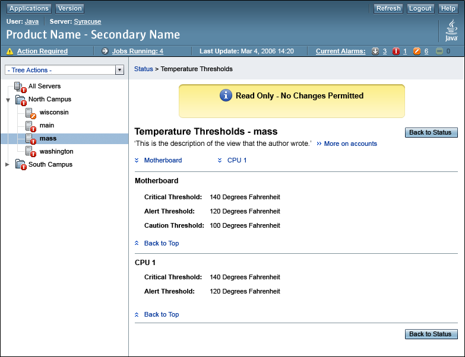
 If the UI elements on a content page are temporarily read-only or are read-only
based on a user's assumed role, use the same information layout as is used for
editable content pages, but use noneditable UI elements (see 6.8.1 Noneditable
User Interface Elements) instead of editable UI elements. For an example, see the
image in the previous section.
If the UI elements on a content page are temporarily read-only or are read-only
based on a user's assumed role, use the same information layout as is used for
editable content pages, but use noneditable UI elements (see 6.8.1 Noneditable
User Interface Elements) instead of editable UI elements. For an example, see the
image in the previous section.
 If UI elements can never be edited because they are immutable
or represent data that is not managed by the application, an alternative is
to present the data in a table, as is shown in the following example. Note
that this design primarily applies to displaying properties. See 9.1.5 Property Table for more information.
If UI elements can never be edited because they are immutable
or represent data that is not managed by the application, an alternative is
to present the data in a table, as is shown in the following example. Note
that this design primarily applies to displaying properties. See 9.1.5 Property Table for more information.
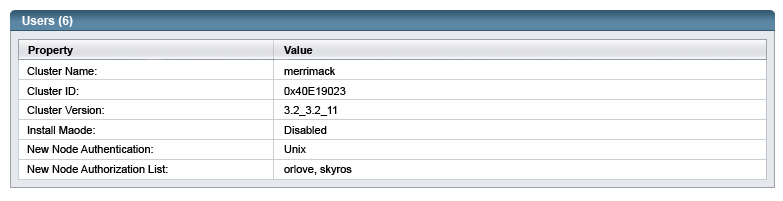
Application developers should decide which alternative makes the most sense for the content pages within their application. The following section contains additional points to consider when deciding which alternative to use.
The guidelines in this chapter identify many possibilities for displaying content pages that are intended to allow users to make edits. These pages are often showing an object's properties. Pages that show an object's properties are called Property pages.
 Use these considerations to decide between using a Property Table, as shown
in the previous section and in 9.1.5 Property Table, and using
a layout of simple fields, as shown in this section:
Use these considerations to decide between using a Property Table, as shown
in the previous section and in 9.1.5 Property Table, and using
a layout of simple fields, as shown in this section:
 Whenever possible, use a content page in the main browser window to allow users to view, edit, and save changes to an object's properties.
Whenever possible, use a content page in the main browser window to allow users to view, edit, and save changes to an object's properties.
See Chapter 3, Windows and Content Pages, for more guidance on using pop-up windows versus using the main browser window, as well as on using primary-content pages versus secondary-content pages.
 When displaying properties for a single object, use a primary-content page.
When displaying properties for a single object, use a primary-content page.
Allowing users to view an object's properties in a primary-content page, instead of having to move to a secondary-content page, provides for a more coherent interface. The presentation of an object and its properties is typically an important aspect of system management and should be represented accordingly within the interface. Remember that secondary-content pages are usually used to serve primary-content pages in some way, not to show primary application information such as an object's properties.
However, showing properties in a secondary-content page is appropriate if the Properties page applies to a multiple selection. In this scenario, the user selects multiple objects from a list or table on a primary-content page, and then chooses an action (for example, Edit Properties) to act on that multiple selection.
The following description identifies the different possibilities for displaying pages that are intended to let users edit object properties. This description also identifies which buttons should be used to allow users to either save or abandon their changes.
In the main browser window:
An editable primary-content page uses Save and (optionally) Reset
buttons.
An editable secondary-content page uses OK, (optionally) Reset,
and Cancel buttons.
A noneditable primary-content page uses no buttons.
A noneditable secondary-content page uses a
"Back to <Short Page Name>", where <Short Page Name>
is a short name for the page the user will be returned to, the page from which the
secondary-content page was invoked.
In a pop-up window:
An editable page uses OK, (optionally) Reset, and Cancel
buttons.
A noneditable page uses a Close button.
Here is an example of a typical Property page. This page is represented as an editable secondary-content page displayed in the main browser window. (See Appendix E, Pixel Specifications for information about laying out UI elements on a page.)
 When it is useful, include on the property page a content page section labeled "Related Information". Make this section the last section on the page. In it, include a simple list of links to each piece of related information. If there is more than one instance of a given piece of information, include the number of instances in parentheses as part of the link.
When it is useful, include on the property page a content page section labeled "Related Information". Make this section the last section on the page. In it, include a simple list of links to each piece of related information. If there is more than one instance of a given piece of information, include the number of instances in parentheses as part of the link.
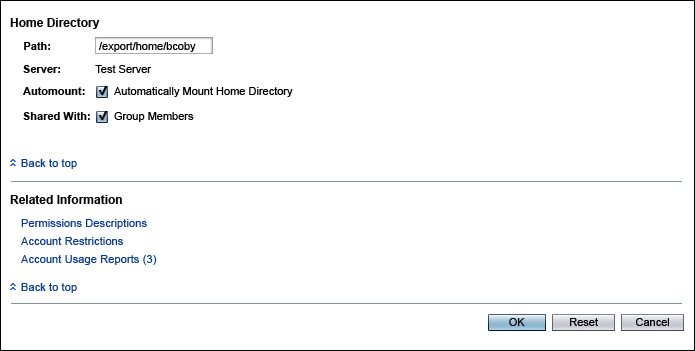
Standard objects which will support being dragged are List Items, Table Rows, Tree Items, and Blocks on a page like Portlets. Checkboxes, radio buttons, action buttons, text fields, etc. are not dragged except in a development tool, which is not what is covered here.
The design and example pictures below include changing the mouse pointer to indicate different drag states (including valid and invalid drop targets). That is the desirable implementation. If this cannot be done, a fallback design is to use a similar icon attached on top of the object being dragged.
The standard operations and their respective drop targets are:
1. Move or Copy Operation: Drop into List boxes (including those in an add-remove), Tables, Tree Branches, Open pages like Portals
2. Create Object Operation: Drop into Open pages like Portals (dragging from a list to create a new portlet, for example)
3. Applying One Object to Another: List Items, Table Rows, Tree Items (dragging an update onto a server, for example).
 When applying one object to another, feedback should be presented as there will be no visible result of the drop operation after it is completed. For things which can be easily reversed, this should be a success popup message which simply has an OK button and identifies what was applied to what -- such as a Javascript Alert (or even better, a custom popup which uses a success icon instead of a warning one). For irreversible operations, a confirmation popup message should be presented before the drop operation is acted upon -- including both OK and Cancel buttons and what will be applied to what, such as a Javascript Confirmation -- and then no subsequent message should be shown. For more details, see 3.3 JavaScript Windows, 14 Alerts and Messages, and 14.2 JavaScript Alerts. Also, see 6.10.9 Applying Table Rows as an example below.
When applying one object to another, feedback should be presented as there will be no visible result of the drop operation after it is completed. For things which can be easily reversed, this should be a success popup message which simply has an OK button and identifies what was applied to what -- such as a Javascript Alert (or even better, a custom popup which uses a success icon instead of a warning one). For irreversible operations, a confirmation popup message should be presented before the drop operation is acted upon -- including both OK and Cancel buttons and what will be applied to what, such as a Javascript Confirmation -- and then no subsequent message should be shown. For more details, see 3.3 JavaScript Windows, 14 Alerts and Messages, and 14.2 JavaScript Alerts. Also, see 6.10.9 Applying Table Rows as an example below.
 Since drag and drop is generally not an accessible feature, an accessible alternative should always be provided for any actions supported by drag and drop. For example, in 6.10.5 Selecting List Items, the user could move list items by using the standard add and remove buttons, but drag and drop may be faster and more convenient to those able to perform that action. Similarly, in 6.10.4 Moving List Items, the user could move list items by using the standard move up and move down buttons, but drag and drop allows a single action, instead of selecting and then pressing a button repeatedly.
Since drag and drop is generally not an accessible feature, an accessible alternative should always be provided for any actions supported by drag and drop. For example, in 6.10.5 Selecting List Items, the user could move list items by using the standard add and remove buttons, but drag and drop may be faster and more convenient to those able to perform that action. Similarly, in 6.10.4 Moving List Items, the user could move list items by using the standard move up and move down buttons, but drag and drop allows a single action, instead of selecting and then pressing a button repeatedly.
 When possible, one step undo should be provided. If undo is provided, more actions can be easily reversed, changing the decision about confirmation vs. success messages above. The success message should remind the user about the availability of undo should the action taken not be desired.
When possible, one step undo should be provided. If undo is provided, more actions can be easily reversed, changing the decision about confirmation vs. success messages above. The success message should remind the user about the availability of undo should the action taken not be desired.
The (mouse) pointer changes to a draggable indicator when over a draggable element.
When the user holds the mouse button and drags the mouse, they are dragging the element.
While an element is being dragged, it becomes partially transparent. The original location remains visible and also becomes partially transparent.
When an element gets to a valid target location, a drop spot is shown and other elements around the target location have their location adjusted if needed. This drop spot is typically a dotted outline of where it will go, or a dotted thick line inserted between existing objects.
When the user releases the element, they are dropping it, and the item snaps into the drop spot. For irreversible actions, a confirmation message may be shown. At that point, the dragged element loses its transparency, the original location disappears, and other elements around the target have their location adjusted if needed (if they weren't adjusted enough already while dragging).
When an element is over an invalid target location, the pointer changes to an invalid location symbol. If the user drops the element while the invalid location symbol is shown, the element snaps back to its original location and the dragged element disappears.
6.10.2 Moving PortletsPortlets being moved around a page which the user can customize in layout is the most basic drag and drop example. |
|
|
|
|
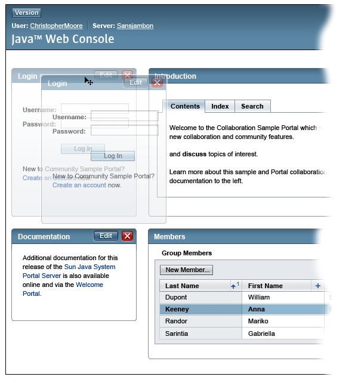
|
|
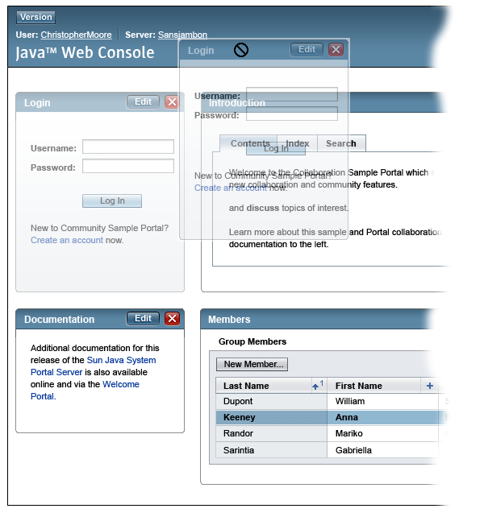
|
|
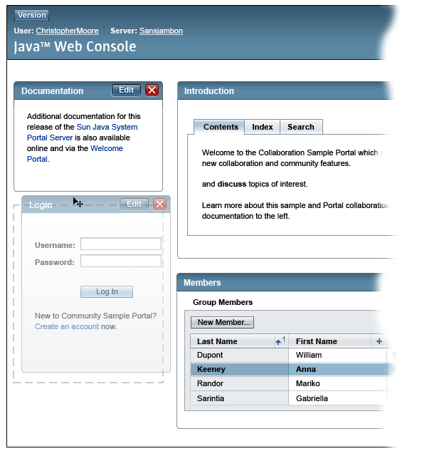 |
|
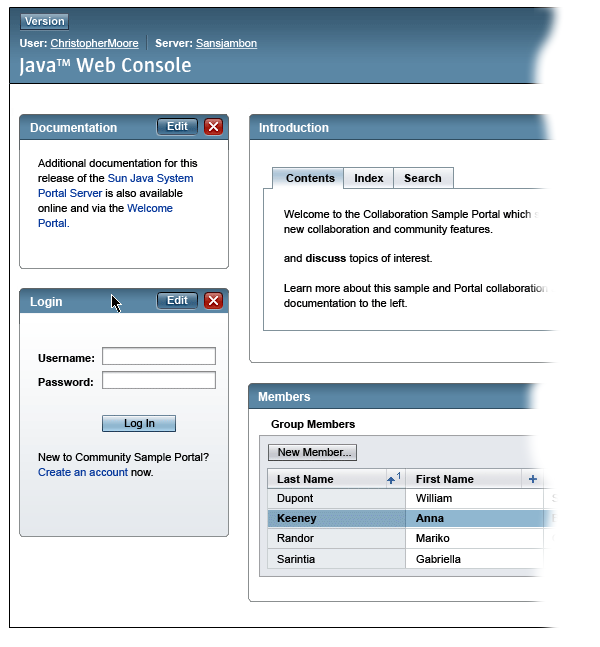 |
6.10.3 Creating PortletsDrag and drop for creating portlets on the page in the first place is simliar. The objects begin as items in a list on a palette, however, so transform from a list item to a portlet as they get onto the page. Creating items from a list is a bit different than moving items, in that the original item will remain when the action is complete. Therefore, the original item does not become partially transparent during dragging, but just remains highlighted to retain information about what is being copied. |
|
|
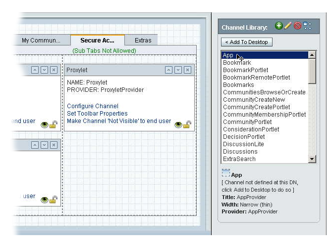 |
|
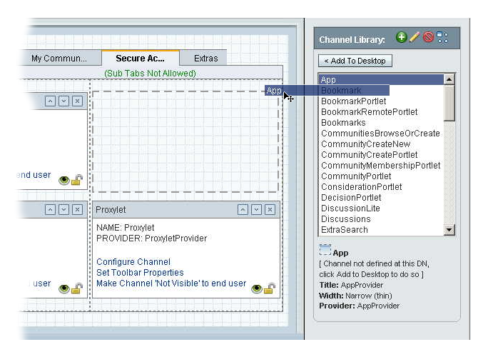 |
|
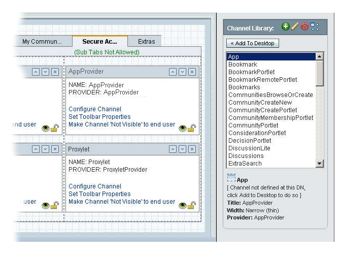 |
|
 |
6.10.4 Moving List ItemsMoving items within a list, such as in an orderable list (see 8.3 Orderable List) or the right side of an Add-and-Remove control (as shown here, see 8.2 Add-and-Remove Idiom) can be done using the standard method of selection and then pressing Move Up or Move Down repeatedly. However, an alternative method of drag and drop can also be provided. |
|
|
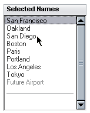
|
|
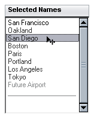
|
|
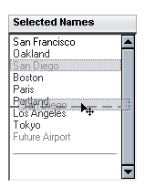
|
|
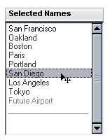
|
6.10.5 Selecting ItemsSelecting items in an Add-and-Remove control (see 8.2 Add-and-Remove Idiom) can similarly be done using the standard method of selection and then pressing Add or Remove. However, an alternative method of drag and drop can also be provided. |
|
|
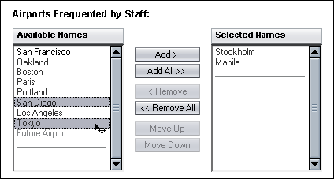
|
|
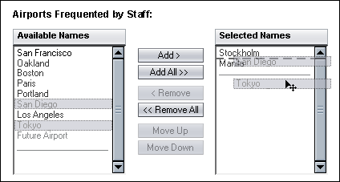
|
|
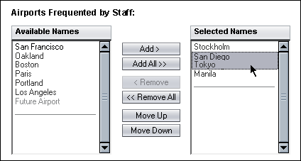
|
|
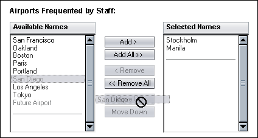
|
6.10.6 Copying ItemsCopying items is a bit different than moving items, in that the original item will remain when the action is complete. Therefore, the original item does not become partially transparent during dragging, but just remains highlighted to retain information about what is being copied. The example below shows an Add-and-Remove control (see 8.2 Add-and-Remove Idiom) which does not remove items from the left list when they are selected, which might be used if an item can be selected multiple times, for example. Otherwise, it behaves just like Selecting Items above. |
|
|
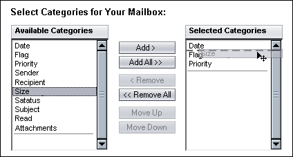
|
6.10.7 Moving Tree ItemsMoving tree items is similar to moving list items, but can be a bit more complex due to the hierarchy of tree folders. |
|
|
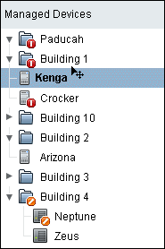
|
|
|
|
|
|
|
6.10.8 Moving Table RowsMoving table rows is similar to moving list items, and can be done within a single table (similar to 6.10.4 Moving List Items) or from one table to another (similar to 6.10.5 Selecting Items, but typically vertically). |
|
|
|
|
|
|
|
6.10.9 Applying Table RowsIn some occasions, an item is not being moved or copied, but one item is being applied to a second item. For example, a security patch might be dragged and dropped to apply it to a certain server. Much like copying does not remove the original location upon completion of the action, the original item being applied does not go away after being applied, so the original location does not become partially transparent when being dragged. |
|
|
|
|
|
|
|
|
|
|
 |
|
|
|
|
| Privacy Policy | Terms of Use | Trademarks | Copyright 2007 Sun Microsystems, Inc. |